DOH UHC Survey Year 2 — CAPI System Documentation & Verification
Computer-Assisted Personal Interviewing (CAPI) system for the Universal Health Care Survey Year 2 · Asian Social Project Services, Inc. (ASPSI) for the Department of Health (DOH) · prepared for PSA review.
Overview & Architecture
The survey is collected on tablets/phones running CSEntry (the U.S. Census Bureau's free CSPro data-collection app) and consolidated on a CSWeb server. A separate Progressive Web App (PWA) handles the Healthcare Worker Survey (F2) and its Admin Portal.
| Layer | Technology | Role |
|---|---|---|
| Field device | CSEntry (Android), offline-first | Enumerator runs the interview on a tablet — works with no signal, syncs when connected. |
| Instruments | CSPro CAPI applications | F1 Facility Head, F3 Patient, F4 Household — each a structured questionnaire with skip logic, validation, GPS and photo capture. |
| Server | CSWeb 8.0.1 (csweb.asiansocial.org) | Receives synced cases, monitoring dashboard / sync report, user management, deployment of app updates. |
| HCW survey | F2 Progressive Web App + Admin Portal | Browser-based Healthcare Worker Survey and its administration console. |
End-to-end flow: install CSEntry → download the instrument from CSWeb → interview (offline-capable, with GPS & verification photo) → sync to CSWeb → monitor on the dashboard.
Verification Status
All three CAPI instruments were launched and verified working on an Android tablet (2560×1600). Each opens, compiles, loads its full multi-section structure, and accepts data entry.
| Component | Status | Evidence |
|---|---|---|
| F1 Facility Head Survey (CSEntry) | Verified working | App opens, new case loads full structure (below) |
| F3 Patient Survey (CSEntry) | Verified working | Case listing, entry, full section tree (below) |
| F4 Household Survey (CSEntry) | Verified working | App opens with case (below) |
| CSWeb server | Live Dashboard pending login | Sign-in page live (below); authenticated dashboard to be added |
| F2 HCW Survey PWA + Admin Portal | Live Authed dashboards pending login | PWA enrollment + Admin sign-in + operator guide captured (below); in production since v2.0.0 |
Installing the Tablet App (all CAPI instruments)
- Install CSEntry — on the tablet, open Google Play, search CSEntry (publisher U.S. Census Bureau, free), install, and open it.
- Add the instrument from the server — in CSEntry, open the menu (⋮) → Add Application → from a CSWeb server. Enter the server address exactly:
https://csweb.asiansocial.org/csweb/api, log in with the field user account, and choose the instrument (FacilityHeadSurvey / PatientSurvey / HouseholdSurvey). - Open it — the instrument now appears under Entry Applications. Tap it to start interviewing.
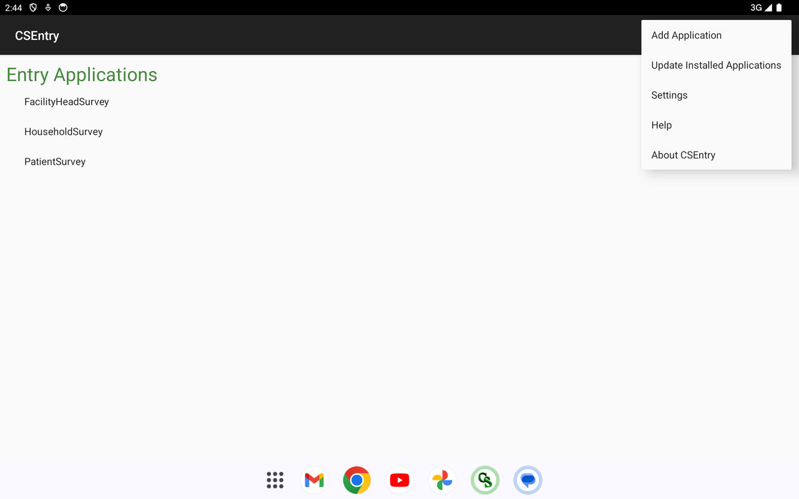
F3 — Patient Survey
The patient exit interview — UHC awareness, PhilHealth, primary care, health-seeking behaviour, costs, medicines access, referrals, and satisfaction.
Opening the app & case list
Starting an interview — Questionnaire Number
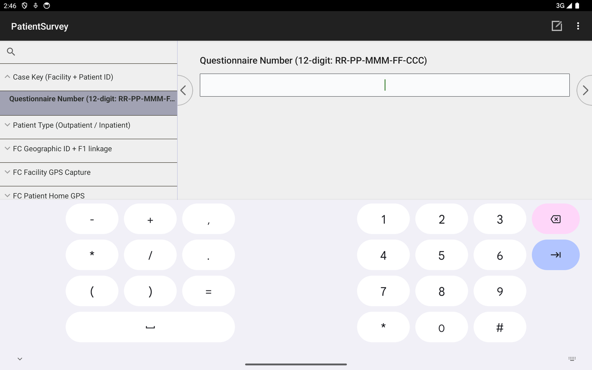
Patient type & full questionnaire structure
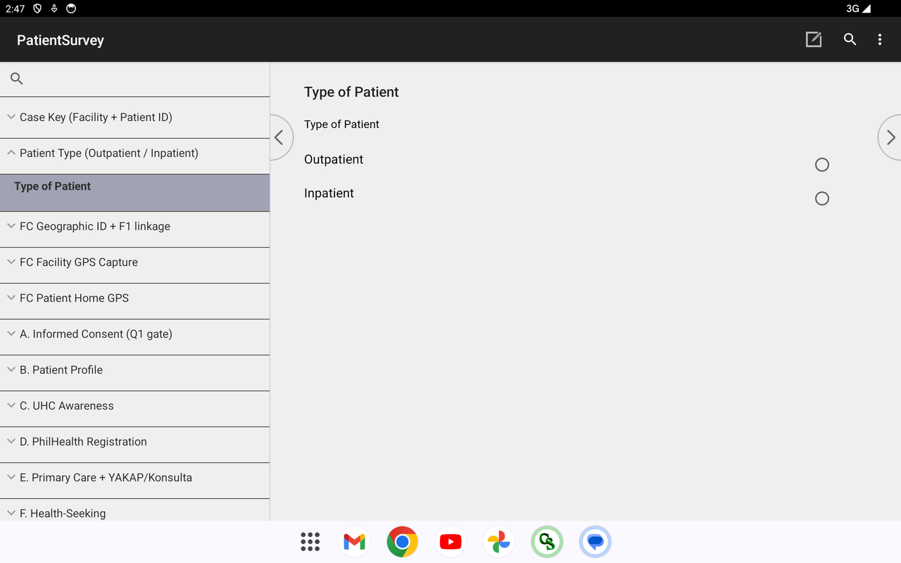
Saving / interrupting an interview
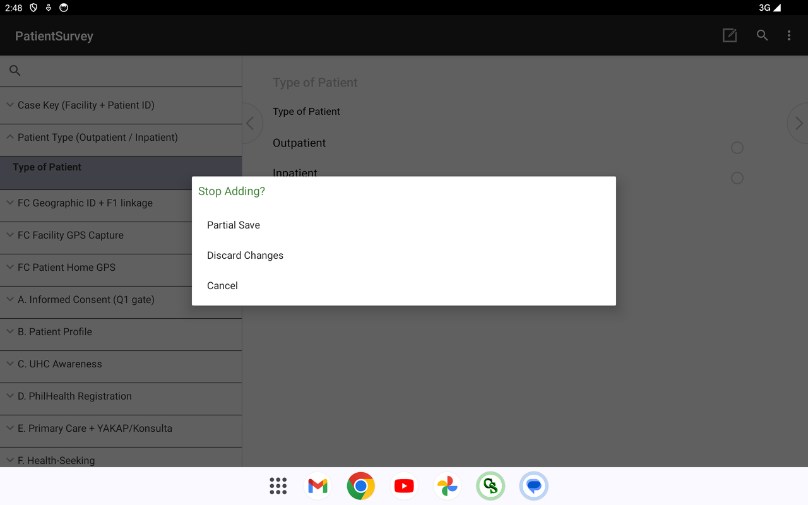
Validation & GPS capture
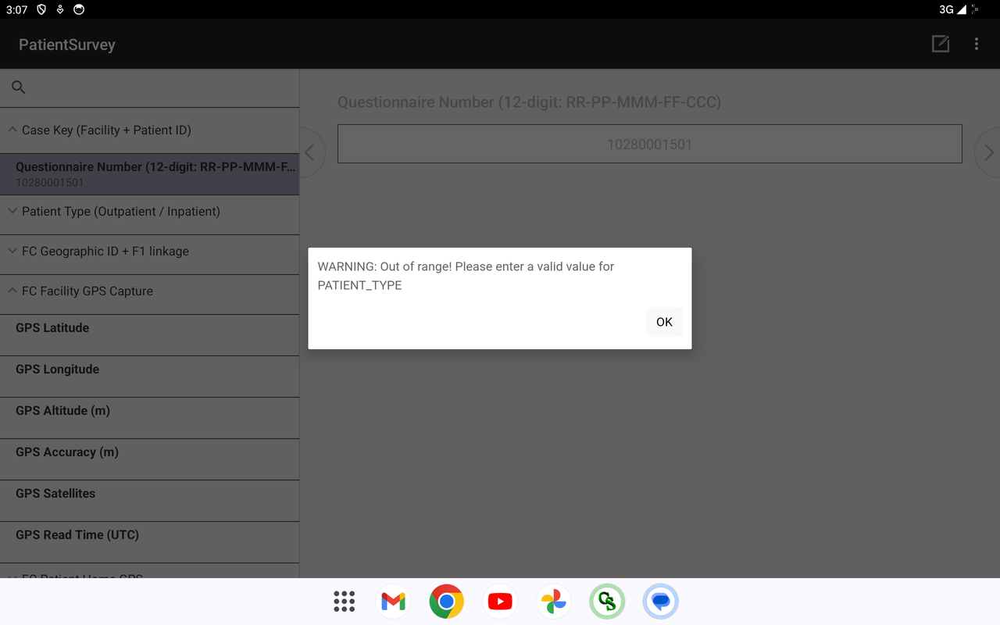
Complete question list
Every question the deployed instrument asks, grouped by section — generated from the question data so it matches the live app exactly. Click a section to expand.
Show all 226 questions — F3 — Patient Survey, by section
Field Control
- Survey Team Leader's Name (text)
- Enumerator's Name (text)
- Field Validated by (text)
- Field Edited by (text)
- Date First Visited the Patient (YYYYMMDD) (number)
- Date of Final Visit to the Patient (YYYYMMDD) (number)
- Total Number of Visits (number)
- Result of First Visit (select one)Completed · Completed at the Hospital · Postponed · Incomplete · Completed at Home · Withdraw Participation/Consent
- Result of Final Visit (select one)Completed · Completed at the Hospital · Postponed · Incomplete · Completed at Home · Withdraw Participation/Consent
- Language used for the interview (text)
- Type of Patient (select one)Outpatient · Inpatient
- Region Code (PSGC) (number)
- Province / HUC Code (PSGC) (number)
- City / Municipality Code (PSGC) (number)
- Facility Number (within municipality) (number)
- Case Sequence (per-facility, per-instrument) (number)
- Region (from PSGC) (text)
- Province / HUC (from PSGC) (text)
- City / Municipality (from PSGC) (text)
Patient Geographic Identification
- Classification (select one)UHC IS · Non-UHC IS
- Region (select one)(set at runtime)
- Province / HUC (select one)(set at runtime)
- City / Municipality (select one)(set at runtime)
- Barangay (select one)(set at runtime)
- Facility Name (text)
- Facility Address (text)
- Patient Home Region (select one)(set at runtime)
- Patient Home Province / HUC (select one)(set at runtime)
- Patient Home City / Municipality (select one)(set at runtime)
- Patient Home Barangay (select one)(set at runtime)
Facility GPS Capture
- GPS Latitude (text)
- GPS Longitude (text)
- GPS Altitude (m) (text)
- GPS Accuracy (m) (number)
- GPS Satellites (number)
- GPS Read Time (UTC) (text)
Patient Home GPS Capture
- GPS Latitude (text)
- GPS Longitude (text)
- GPS Altitude (m) (text)
- GPS Accuracy (m) (number)
- GPS Satellites (number)
- GPS Read Time (UTC) (text)
Case Verification Photo
- Verification Photo Filename (text)
- Take Verification Photo (select one)Take verification photo
A. Introduction and Informed Consent
- 1. Before we begin, to confirm, are you the patient? (select one)Yes · No
- 2. What is your relationship to the patient? (select one)Spouse · Son · Daughter · Step-son · Step-daughter · Son-in-law · Daughter-in-law · Grandson · Granddaughter · Father · Mother · Brother · Sister · Uncle · Aunt · Nephew · Niece · Neighbor · Other (specify) · Refuse to answer (DO NOT READ OUT LOUD)
- 3. Do you live in the same house as the patient? (select one)Yes · No
B. Patient Profile
- 4. Patient's Name (Last Name, First Name, MI, Extension) (text)
- 5. In what month and year was the patient born? (number)
- 6. Just to confirm, how old is the patient as of his/her last birthday? (in years) (number)
- 7. What is the patient's sex at birth? (select one)Male · Female
- 8. Is the patient part of the LGBTQIA+ community? (e.g., gay, lesbian, bisexual, etc.). It is fine if not comfortable answering. (select one)Yes · No · Not Comfortable to Answer · Don't Know · Refused to answer
- 9. Which group does the patient identify with? (select one)Lesbian · Gay · Bisexual · Transgender · Queer · Intersex · Asexual · Other (specify)
- 10. What is the patient's civil status? (select one)Single / Never Married · Married · Common law / Live-in · Widowed · Divorced · Separated · Annulled · Not reported
- 11. Does the patient identify as a person with a disability? (select one)Yes · No
- 12. Would the patient like to specify the type of disability? (select one)Yes · No
- 13. May we view the patient's PWD Identification Card? (select one)Yes (card was presented and verified) · No (card not available at the time of interview) · Respondent refused to present card
- 14. Based on the presented PWD Identification Card, what type of disability is indicated? (select one)Physical disability (Orthopedic) · Visual disability · Hearing disability · Speech impairment · Intellectual disability · Psychosocial disability · Multiple disabilities · Other disability (specify)
- 15. What is the highest level of education the patient has attained? (select one)Early Childhood Education (Pre-school) · Primary Education (Grade 1 to 6) · Lower Secondary Education (Grade 7 to 10) · Upper Secondary Education (Grade 11 to 12) · Post-Secondary Non-Tertiary Education (including Technical and Vocational degrees with a certificate) · Short-Cycle Tertiary Education or Equivalent (including Technical and Vocational degrees with a diploma) · Bachelor Level Education or Equivalent · Master Level Education or Equivalent · Doctoral Level Education or Equivalent · No schooling · Other (specify) · I don't know · Not applicable
- 16. What is the patient's employment status? (select one)Has a permanent job/ own business · Has a short-term, seasonal, casual job/business · Worked on different jobs day to day per week · Unemployed and looking for work · Unemployed and not looking for work · Studying · Retired · I don't know · Not applicable
- 17. What is the patient's main source of income? (select one)Working for private company · Working for private household · Working for government · Worked with pay in own family business or farm · Self-employed without any paid employee · Worked without pay in own family business or farm · Pension · Unemployed and looking for work · Unemployed and not looking for work · I don't know
- 18. In the past 6 months, what is the patient's average monthly household income? Please specify in Philippine pesos. (number)
- 19. How many total individuals (including children) live in the patient's house now? (number)
- 20. How many non-working age children (i.e., below the age of 18) live in the patient's house now? (number)
- 21. How many senior citizens live in the patient's house now? (number)
- 22. Does the patient have electricity in their household? (select one)Yes · No
- 23. What is the patient's family's main source of water supply for daily use? (select one)Faucet inside the house · Tubed/piped well · Dug well · Other (specify)
- 24. Does the patient have their own faucet, or do they share with their community? (select one)I/we have our own · I/we share with our community
- 25. Does the patient have their own tube/pipe, or do they share with their community? (select one)I/we have our own · I/we share with our community
- 26. Does the patient's family own a refrigerator/freezer? (select one)Yes, I/ we have · No, I/we don't have
- 27. Does the patient's family own a television set? (select one)Yes, I/ we have · No, I/we don't have
- 28. Does the patient's family own a washing machine? (select one)Yes, I/ we have · No, I/we don't have
- 29. How would the socioeconomic class of the patient's household be classified? (select one)Class A or B (working professionals or with a business with several assets) · Class C (working professionals with permanent or semi-permanent income and some assets) · Class D or E (semi-permanent workers or informal sector workers with little to no assets) · I don't know
- 30. Is the patient member of Indigenous People (IP) community, like the Igorot, Lumad, Mangyans, etc.? (select one)Yes · No
- 31. If yes, which group? (Specify) (text)
- 32. Is the patient's household a beneficiary of the Pantawid Pamilyang Pilipino Program (4Ps)? (select one)Yes · No
- 33. Is the patient the main decision-maker on health care in your household? (select one)Yes (the Patient is the main decision maker) · No · The Companion answering the survey is the main decision maker
- 34. Who takes the most responsibility for making the decisions regarding healthcare in the patient's household? (select one)Patient's father · Patient's mother · Patient's parents · Patient's spouse/partner · Both patient and spouse · Patient's sibling · Patient's grandfather · Patient's grandmother · Patient's uncle · Patient's aunt · Other (specify)
C. Awareness on Universal Health Care (UHC)
- 35. Have you heard about Universal Health Care (UHC) prior to this survey? (select one)Yes · No
- 36. What is your source of information about UHC? (select all that apply)News · Legislation · Social Media · Friends / Family · Health center/ facility · LGU/ Barangay · I don't know · Other (Specify)
- 37. What is your understanding about UHC? (select all that apply)Protection from financial risk/decreased out-of-pocket spending · Access to quality and affordable health care goods and services · Automatic enrollment into PhilHealth · Primary care provider for every Filipino · I don't know · Other (Specify)
D. PhilHealth Registration and Health Insurance
- 38. Are you currently registered with PhilHealth? (select one)Yes · No · I don't know
- 39. How did you find out about how to register for PhilHealth? (select one)PhilHealth representative · LGU · Primary care provider · Other health care provider · Employer · No one / self-registered · Barangay Health Worker · Friends / Family · Health center/facility · Other (Specify)
- 40. Who assisted you in the registration process? (select one)PhilHealth representative · LGU · Primary care provider · Other health care provider · Employer · No one / self-registered · Barangay Health Worker · Friends / Family · Health center/facility · Other (Specify)
- 41. Did you have any difficulties in the registration process? (select one)Yes · No
- 42. What did you find difficult about the process? (select all that apply)Unclear process · Took a long time · Did not know where to ask for help · Had to travel a long way · No valid ID · Did not know the required documents to register · I don't know · Other (Specify)
- 43. Would you know where to go to seek assistance during registration? (select one)Yes · No
- 44. Where would you go to seek assistance? (select one)PhilHealth representative · LGU · Primary care provider · Other health care provider · Employer · No one / self-registered · Barangay Health Worker · Friends / Family · Health center/facility · Other (Specify)
- 45. What category of member are you? (select one)Formal economy (i.e., individuals working in the government or private sector based in the country) · Informal economy (i.e., unemployed, self-employed, informal workers, Filipinos with dual citizenship, naturalized Filipino citizens, citizens of other countries working and/or residing in the Philippines) · Indigent (i.e., individuals who have no visible means of income, or whose income is insufficient for family subsistence based on DSWD's specific criteria) · Sponsored (i.e., members whose contributions are being paid for by another individual, government agencies, or private entities. Includes some low-income citizens that are not indigent e.g. BHWs, PWDs) · Lifetime member (i.e., individuals aged 60 years and above, uniformed personnel aged 56 years and above, and SSS underground miner-retirees aged 55 years and above and paid at least 120 monthly contributions with PhilHealth and the former Medicare... · Senior citizen (i.e., residents of the Philippines, aged sixty (60) years or above and are not currently covered by any membership category of PhilHealth and qualified dependents of senior citizen members who are also senior citizen themselves or... · Overseas Filipino Worker (OFW) · Qualified dependents (i.e., those whose contributions are declared and covered by a principal member) · I don't know · Other (Specify)
- 46. What are some of the benefits that come with being a PhilHealth member? (select all that apply)No balance billing for basic ward accommodation · Subsidized inpatient services · Subsidized outpatient services · There are no benefits to being a member · I don't know · Other (Specify)
- 47. Awareness of PhilHealth package (select one)Yes · No
- 48. Do you pay PhilHealth premiums every month? (select one)Yes, I pay directly · Yes, my employer pays · No, I do not pay premiums
- 49. Do you find it difficult to pay your PhilHealth premium every month? (select one)Yes · No
- 50. Why did you find it difficult? (select all that apply)Cannot afford the premium · Payment options are inconvenient · No time to pay · Don't see value in paying · System of PhilHealth is unreliable/usually down · I don't know · Other (Specify)
- 51. Are you registered with another health insurance plan? (select one)Yes · No
- 52. Which health insurance plan/s are you enrolled in? (select all that apply)GSIS · SSS · Private Insurance · HMO · Pag-ibig · I don't know · Others (specify)
E. Primary Care Utilization
- 53. Do you have a primary care provider? (select one)Yes · No
- 54. Who is your main primary care provider? (select one)General practitioner · Specialty Care Provider/ Specialist · Both · Other (specify) · None
- 55. Is the location of your main primary care provider convenient for you? (select one)Yes · No
- 56. Is your main primary care provider's clinic hours (time that your provider/s is/are open for medical appointments) convenient for you? (select one)Yes · No
- 57. Is the usual wait for setting an appointment with your main primary care provider convenient for you? (select one)Yes · No
- 58. Wait time to set appointment with main primary care provider (number)
- 59. What mode/s of communication was/were available to you when scheduling a consultation with your main primary care provider? (select all that apply)Face-to-face · Teleconsultation · Landline · Cellphone · Video Conference
- 60. If teleconsultation was available, did you succeed in using the teleconsult? (scheduling) (select one)Yes · No
- 61. What mode/s of communication was/were available to you when consulting with your main primary care provider? (select all that apply)Face-to-face · Teleconsultation · Landline · Cellphone · Video Conference
- 62. If teleconsultation was available, did you succeed in using the teleconsult? (consultation) (select one)Yes · No
- 63. In the past 12 months, do you have a clinic, or health center that you usually go to? (select one)Yes · No
- 64. What is the name of the facility? (text)
- 65. If none, why do you not have a usual clinic, or health center that you usually go to? (select all that apply)I don't get sick · I recently moved into the area · It's expensive · I can treat myself · I don't know where to go for care · I don't know · Other (Specify)
- 66. Is [facility_name_input] the facility you usually go to for general health concerns? (select one)Yes · No
- 67. Why did you go to this facility instead of your usual facility? (select all that apply)This facility is more accessible than my usual facility (i.e., nearer, has more transportation options to get to, and cheaper to travel to) · Needed a service/specialist not available at my usual facility · Recommended by friends/family · Wanted to try another facility than my usual · Prefer this facility than my usual · This was referred to me by my usual facility · Usual facility is closed for today · Other (Specify)
- 68. What is the type of health facility that you usually go to? (select one)YAKAP/Konsulta or primary care provider · Barangay Health Center/ Barangay Health Station · Rural Health Unit / Urban Health Center · Public Hospital · Private Hospital · Private Clinic · Traditional Healer or Manghihilot/ Albularyo · I don't know · Other (specify)
- 69. How long does it take you to travel to the health facility you usually go to (number)
- 70. What mode/s of transportation do you use when travelling to the health facility that you usually go to? (select all that apply)Walk · Bike · Public Bus · Jeepney · Tricycle · Car (including private taxi/cab) · Motorcycle · Boat · Taxi · Pedicab · E-bike · Other (Specify)
- 71. What is the type of the primary care facility nearest to your house? (select one)Barangay Health Center/ Barangay Health Station · Rural Health Unit / Urban Health Center · Public Hospital · Private Hospital · Private Clinic · Traditional Healer or Manghihilot/ Albularyo · I don't know · Other (specify)
- 72. How long does it take you to travel from your house when going to the nearest primary care facility? (number)
- 73. What mode/s of transportation do you use when travelling to the nearest primary care facility? (select all that apply)Walk · Bike · Public Bus · Jeepney · Tricycle · Car (including private taxi/cab) · Motorcycle · Boat · Taxi · Pedicab · E-bike · Other (Specify)
- 74. Have you heard of the term "YAKAP/ Konsulta package"? (select one)Yes · No
- 75. What are your sources of information about the YAKAP/Konsulta package? (select all that apply)News · Legislation · Social Media · Friends / Family · Health center/facility · LGU/Barangay · I don't know · Other (Specify)
- 76. What is your understanding about the YAKAP/Konsulta package? (select all that apply)Free primary care consultation (with a registered YAKAP/Konsulta provider) · Free health risk screening and assessment (with a registered YAKAP/Konsulta provider) · Free selected laboratory / diagnostics examination · Free selected drugs and medicines · There are no benefits of the package · I don't know · Other (Specify)
- 77. Are you registered with a YAKAP/Konsulta package provider? (select one)Yes · No · I've never heard of it · I don't know
- 78. When did you register with a YAKAP/Konsulta package provider? (select one)Within the past six (6) months · More than six (6) months but less than one (1) year ago · One (1) year but less than two (2) years ago · Two (2) years ago or more
- 79. Since registering, have you had an appointment with your YAKAP/Konsulta package provider? (select one)Yes · No
- 80. When you have a health problem, do you know how to book an appointment at your YAKAP/Konsulta package provider? (select one)Yes · No
- 81. Was that appointment for a general check-up (i.e. not related to an illness or injury)? (select one)Yes · No
- 82. Why are you NOT registered with a YAKAP/Konsulta package provider? (select all that apply)Don't know what a YAKAP/Konsulta provider is · Don't trust PhilHealth · Don't know how to register · Registration is confusing/time-consuming/inconvenient · Intend to register but do not have found a time to do it. · YAKAP/Konsulta is not available in my local area · Already have a usual primary care provider that I go to · Don't have the required PhilHealth ID to register for YAKAP/Konsulta · Don't have the other requirements to register · I don't know · Other (specify)
F. Patient's Health-Seeking Behavior
- 83. What best describes why the patient visited a health facility (e.g. RHU, health center, clinic, hospital)? (select one)Consultation for new health problem · Consultation to follow-up an ongoing health problem · For tests/diagnostics only · For a general check-up · To get a health certificate/administrative reason · For immunizations/vaccinations · My doctor transferred to this health facility · Other (Specify)
- 84. What type of service did the patient usually access? (select one)Outpatient care (Consultation, procedure, or treatment where the patient visits and leaves within the same day) · Inpatient care (Care provided in hospital or another facility where the patient is admitted for at least one night) · Emergency care (Care for serious illnesses or injuries that need immediate medical attention; usually provided in an emergency room or ER) · Primary care consultation · Other (Specify)
- 85. What condition/s do/es the patient usually visit the facility for? (select all that apply)Upper respiratory infection · Hypertension · Immunization · Pregnancy or birth · Flu · Fever · Joint and muscle pain · Asthma or COPD (chronic breathing problem, not cancer) · Diabetes · Heart problem · Kidney problem /Dialysis · Cancer (any) · Gastro problem (vomiting, diarrhea etc.) · Other infection (e.g. urine, skin, other virus etc.) · Accident/injury (e.g. wound/broken bone) · Dental · ENT (problem with ear/nose/throat) · Allergy · No condition - Regular check-up only · Other (Specify)
- 86. Which of the following happened during the patient's most recent visit? (select all that apply)Saw a doctor · Saw a nurse/midwife · Saw any other healthcare worker/member of medical staff · Had basic tests done (e.g. blood pressure check, height/weight) · Had any laboratory tests done (e.g. blood, urine sample) · Had any imaging done (e.g. ultrasound, Xray, CT) · Prescribed medication · Had any minor procedure/surgery done · Picked up medical certificate/other administration · Was admitted for confinement
- 87. Apart from this visit, has the patient done anything else to improve his/her health condition or address his/her health concern? (select all that apply)Visited other healthcare facility · Sought alternative care (Healthcare apart from medical doctors or the formal healthcare system; such as reflexology... · Sought telemedicine (Remote diagnosis and treatment of patients by means of telecommunications technology) · Used home care (Healthcare services and support provided to individuals in their own homes) · Bought medicine from a pharmacy · Did not seek other forms of care · Other (Specify)
G. Outpatient Care
- 88. Why are you visiting [FACILITY_NAME_INPUT] for consultation/advice or treatment? (select one)Sick/Injured · Prenatal/Post-natal Check-up · Gave Birth · Dental check-up · Medical check-up · Medical requirement · NHTS/CCT/4Ps Requirement · Other (specify)
- 89. Were you advised for hospitalization / to be admitted in the hospital? (select one)Yes · No
- 90. What were the reasons why you were not confined/ admitted in a hospital/clinic? (select all that apply)Facility is far · No money · Worried about treatment cost · Home remedy is available · Health facility is not PhilHealth accredited · No need/regular check-up only · Other (specify)
- 91. Do you usually avail consultation services for outpatient care? (select one)Yes · No
- 92. Cost of consultation (select one)Yes · No
- 93. Did you have any of the following laboratory tests done during your outpatient care? (select all that apply)CBC with platelet count · Urinalysis · Fecalysis · Sputum Microscopy · Fecal Occult Blood · Pap smear · Lipid profile · FBS · OGTT (Oral glucose tolerance tests) · ECG · Chest X-Ray · Creatinine · HbA1c · Abdominal ultrasound · Dental Services · Other, specify: · None
- 94. Cost of laboratory test/s (select one)Yes · No
- 95. Were you prescribed medicine/s after your check-up? (select one)Yes · No
- 96. Amount spent for prescribed medicines (select one)Yes · No
- 97. What was the final amount you paid in cash for your outpatient care? (Amount in Pesos) (number)
- 97.1 Other items included in the bill (select one)Yes · No
- 97.2 Other expenses during OPD visit not in bill (select one)Yes · No
- 98. Used to pay for medical costs (select one)Yes · No
- 99. Have you heard about Bagong Urgent Care and Ambulatory Services (BUCAS) center? (select one)Yes · No
- 100. If yes, what are your sources of information about this BUCAS center? (select all that apply)News · Legislation · Social Media · Friends / Family · Health center/facility · LGU/Barangay · I don't know · Other (Specify)
- 101. What is your understanding about a BUCAS center? (select all that apply)Provides urgent care for non-life-threatening/serious conditions · Offers outpatient and ambulatory health services · Helps reduce overcrowding in hospitals · Allows access to timely medical consultation and treatment · Other (specify)
- 102. Have you accessed the services in a BUCAS center? (select one)Yes · No
- 103. If yes, which service/s did you avail? (select all that apply)Medical consultation for urgent or minor conditions · Outpatient or ambulatory care services · Basic diagnostic services (e.g., laboratory tests, X-ray) · Minor procedures or treatments · Referral to higher-level health facilities · I don't know · Other (specify)
- 104. Without BUCAS Center, where would you have gone? (select one)Another DOH hospital · Private clinic/hospital · LGU hospital · Rural Health Unit / Health Center · Would not seek care · Others
H. Inpatient Care
- 105. Why are you confined in the hospital? (select one)Sick · Injured · Gave birth · Executive check-up · Other (specify)
- 106. How long were you confined? (number)
- 107. Total bill for confinement (select one)Yes · No
- 108. Other than the medicine/s indicated in the hospital bill, did the patient buy medicine/s from any pharmacy/facility outside the hospital? (select one)Yes · No
- 109. Amount paid for medicines outside the hospital (select one)Yes · No
- 110. Other than the laboratory service/s indicated in the hospital bill, did the patient pay for other service/s outside the hospital? (select one)Yes · No
- 111. If yes, what are those services? (text)
- 112. Amount paid for services outside the hospital (select one)Yes · No
- 113. Used to pay for hospital bill (select one)Yes · No
- 114. Why did you not avail of PhilHealth benefits? (If PhilHealth was not availed in 113) (select all that apply)Not a PhilHealth member · PhilHealth member but not eligible for benefits · Probably used PhilHealth but cannot remember amount because benefit was deducted upon discharge from hospital · Too many requirements to comply with before can avail · Limited hospitalization benefits · Claims processing too long · Other (specify)
- 115. What was the final amount you paid in cash at the hospital cashier upon discharge? (Amount in Pesos) (number)
- 115.1 Other items included in the bill (select one)Yes · No
- 115.2 Other expenses during confinement not in bill (select one)Yes · No
I. Financial Risk Protection
- 116. Have you heard of the No Balance Billing (NBB)? (select one)Yes · No · I don't know
- 117. If yes, what are your sources of information about NBB? (select all that apply)News · Legislation · Social Media · Friends / Family · Health center/facility · LGU/Barangay · I don't know · Other (Specify)
- 118. What is your understanding about NBB? (select all that apply)Patient does not pay any hospital bill · PhilHealth will cover cost of treatment · Medicine and service are already included · No cash payment required upon discharge · Applies only to certain patients or hospitals · Bills are settled between the hospital and PhilHealth · Patients should not be charged extra fees · I don't know · Other (Specify)
- 119. Have you heard of the Zero Balance Billing (ZBB)? (select one)Yes · No · I don't know
- 120. If yes, what are your sources of information about ZBB? (select all that apply)News · Legislation · Social Media · Friends / Family · Health center/facility · LGU/Barangay · I don't know · Other (Specify)
- 121. What is your understanding about ZBB? (select all that apply)Patient does not pay any hospital bill · PhilHealth will cover cost of treatment · Medicine and service are already included · No cash payment required upon discharge · Applies only to PhilHealth members and DOH-run hospitals · Bills are settled between the hospital and PhilHealth · Patients should not be charged extra fees · I don't know · Other (Specify)
- 122. Were you informed about ZBB upon admission? (select one)Yes · No
- 123. To what extent did ZBB reduce your financial burden? (select one)ZBB significantly reduced my financial burden by covering my expenses · It helped lessen some costs, but I still incurred Out-of-Pocket (OOP) expenses · ZBB provided some financial relief, though the support was limited compared to my total needs · ZBB did not make a noticeable difference in my financial situation
- 124. Have you heard of the Medical Assistance for Indigent and Financially Incapacitated Patients (MAIFIP)? (SKIP IF ANSWERED MAIFIP IN Q113) (select one)Yes · No · I don't know
- 125. What are your sources of information about MAIFIP? (select all that apply)News · Legislation · Social Media · Friends / Family · Health center/facility · LGU/Barangay · I don't know · Other (Specify)
- 126. Did you avail of MAIFIP in this last confinement? (select one)Yes · No
- 127. If you availed MAIFIP, did you have to make any out-of-pocket payment? (select one)Yes · No
- 128. Which items did you have to pay for out-of-pocket? (select all that apply)Drugs · Laboratory · Professional Fees · Accommodation
- 129. Why did you not avail of MAIFIP during this last confinement? (select all that apply)Not eligible · Too complicated · I don't like to stay in basic ward · There is no available basic ward
- 130. Have you or your household had to reduce spending on things you need (such as food, housing, or utilities) because of this health expenditure in the last 1 month? (select one)Yes · No · Don't know · Refused to answer
J. Satisfaction on Amenities and Medical Care
- 131. Satisfaction with cleanliness and comfort (select one)Very Satisfied · Satisfied · Neither Satisfied nor Dissatisfied · Dissatisfied · Very Dissatisfied · Not applicable
- 132. Satisfaction with cleanliness and comfort (select one)Very Satisfied · Satisfied · Neither Satisfied nor Dissatisfied · Dissatisfied · Very Dissatisfied · Not applicable
- 133. Satisfaction with cleanliness and comfort (select one)Very Satisfied · Satisfied · Neither Satisfied nor Dissatisfied · Dissatisfied · Very Dissatisfied · Not applicable
- 134. Satisfaction with cleanliness and comfort (select one)Very Satisfied · Satisfied · Neither Satisfied nor Dissatisfied · Dissatisfied · Very Dissatisfied · Not applicable
- 135. Were you satisfied with the overall time spent from registration to exiting the facility? (For inpatients only) (select one)Very Satisfied · Satisfied · Neither Satisfied nor Dissatisfied · Dissatisfied · Very Dissatisfied · Not applicable
- 136. In most recent visit, how often did the staff treat you with courtesy and respect? (select one)Never · Sometimes · Usually · Always · I don't know
- 137. In most recent visit, how often did the staff listen carefully to what you say or ask? (select one)Never · Sometimes · Usually · Always · I don't know
- 138. In most recent visit, how often did the staff explain your condition and procedures in a way you can understand? (select one)Never · Sometimes · Usually · Always · I don't know
- 139. In most recent visit, how often did the staff give you the chance to make decisions about your treatment? (select one)Never · Sometimes · Usually · Always · I don't know
- 140. In most recent visit, how often did the staff ask you for your consent before performing any treatments or tests? (select one)Never · Sometimes · Usually · Always · I don't know
- 141. In your most recent visit, did the staff assure you that information about the patient's condition will be kept confidential? (select one)Yes · No · I don't know
- 142. In your most recent visit, did the staff respect your privacy during the physical consultation? (select one)Yes · No · I don't know
- 143. Overall, would you recommend [facility_name_input] to a friend or relative? (select one)Yes · No
- 144. How would the patient rate the quality of care you received at [facility_name_input]? (select one)Very Satisfied · Satisfied · Neither Satisfied nor Dissatisfied · Dissatisfied · Very Dissatisfied · Not applicable
K. Access to Medicines
- 145. How often do you purchase or receive medicines? (select one)Weekly · Bi-weekly · Monthly · Rarely · Never
- 146. Was the most recent medicine purchased prescribed by a doctor or over-the-counter (OTC) medicine (no need for a prescription)? (select one)Prescribed by a doctor · Over-the-counter medicine · Purchased both prescribed medicine and OTC medicine · I don't know
- 147. What are the medications that you usually take? (text)
- 148. What are the medical conditions that you take the medicines for? (select one)Upper respiratory infection · Hypertension · Immunization · Pregnancy or birth · Flu · Fever · Joint and muscle pain · Asthma or COPD (chronic breathing problem, not cancer) · Diabetes · Heart problem · Kidney problem /Dialysis · Cancer (any) · Gastro problem (vomiting, diarrhea, etc.) · Other infection (e.g. urine, skin, other virus etc.) · Accident/injury (e.g. wound/broken bone) · Dental · ENT (problem with ear/nose/throat) · Allergy · No condition - Regular check-up only · Other (Specify)
- 149. Where do you usually buy or receive your medicines? Select all that apply. (select all that apply)Public Hospital · Private Hospital · Chain Pharmacies (e.g. Mercury Drug, Watsons, TGP, Generika) · Local pharmacies · Online stores (e.g. Shopee, Lazada) · Barangay Health Station · Rural Health Unit or City Health Office · Other (specify)
- 150. Travel time from home to nearest pharmacy (number)
- 151. How easy is it for you to access a pharmacy or drugstore? (select one)Very difficult · Difficult · Neutral · Easy · Very easy
- 152. Have you heard of the Guaranteed and Accessible Medications for Outpatient Treatment (GAMOT) Package, which is part of PhilHealth's YAKAP/Konsulta or primary care benefit package? (select one)Yes · No
- 153. If yes, what are your sources of information for GAMOT Package? (select all that apply)News · Legislation · Social Media · Friends / Family · Health center/facility · LGU/Barangay · I don't know · Other (Specify)
- 154. What is your understanding of the GAMOT Package? (select all that apply)Provides free or affordable medicines for outpatients · Ensures continuous availability of essential medicines · Helps reduce out-of-pocket expenses for medicines · Supports treatment of common illnesses and chronic conditions · I don't know · Other (specify)
- 155. Did you get the medicines from the GAMOT Package during the past 6 months? (select one)Yes · No
- 156. What are the medications that you obtained from the GAMOT Package? [LIST] (text)
- 157. Where did you get the rest of the medicines? Select all that apply. (select all that apply)Purchased from pharmacy · Purchased from public hospital · Purchased from private hospital · Purchased from primary care provider (PCP) · Received from PCP for free · Received from LGU for free · Received from public hospital for free · Received from private hospital for free · Other (Specify)
- 158. Do you know the difference between a 'branded' and a 'generic' medicine? (select one)Yes · No
- 159. Was/were the medicine/s you bought outside of GAMOT pharmacy branded or generic? (select one)Branded · Generic · Both branded and generic · Don't know the difference · Not applicable
- 160. If generic, why did you buy generic medicine? (select all that apply)Lower cost · Prescribed by doctor · Readily available · Given for free · More or as effective as branded medicine · I don't know · Other (Specify)
- 161. If branded, why did you buy branded medicine? (select all that apply)Branded medicine is more effective than generic · Not aware of generic option · Prescribed by doctor · Given for free · Prefer branded over generic option · I don't know · Other (Specify)
L. Experiences and Satisfaction on Referrals
- 162. Based on your most recent visit/confinement at [facility_name_input], did a healthcare worker refer you to another facility or specialist for further care or specialized care? (select one)Yes · No
- 163. What type of care was the referral for? (select all that apply)Outpatient care (Consultation, procedure, or treatment where the patient visits and leaves within the same day) · Emergency care (Care for serious illnesses or injuries that need immediate medical attention; usually provided in an emergency room or ER) · Inpatient care (Care provided in hospital or another facility where the patient is admitted for at least one night) · Dental care (Medical care for your teeth, such as cleanings, fillings, etc.) · Other facility visits (Care that is provided in a facility that is not a health center or hospital, such as independent diagnostic centers, TB dispensaries, etc.) · Special therapy visits (Rehabilitation care or services, such as occupational therapy, physical therapy, psychological and behavioral rehabilitation, prosthetics and orthotics rehabilitation, or speech... · Alternative care (Healthcare apart from medical doctors or the formal health care system; such as reflexology, acupuncture, massage therapy, herbal medicines, etc.) · Outreach / medical missions (Care provided by the government or an NGO through an outreach or medical mission within a community) · Home healthcare (Care that is administered at the patient's home, such as birth delivery, checkups, immunization, rehabilitation, etc.) · Telemedicine (Remote diagnosis and treatment of patients by means of telecommunications technology) · None of the above · Other (Specify)
- 164. What kind of specialist did they recommend? (select one)No specialty · Anesthesia · Dermatology · Emergency Medicine · Family Medicine · General Surgery · Internal Medicine · Neurology · Nuclear Medicine · Obstetrics and Gynecology · Occupational Medicine · Ophthalmology · Orthopedics · Otorhinolaryngology (ENT) · Pathology · Pediatrics · Physical and Rehabilitation Medicine · Psychiatry · Public health · Radiology · Research · I don't know · Other (Specify)
- 165. How did they refer you to the doctor? (select one)Physical referral slip · E-referral · Phone call from referring facility to receiving facility · I don't know · Other (Specify)
- 166. Did they discuss with you the different places you could have gone to address your health problem? (select one)Yes · No
- 167. Did they help you make the appointment for that visit? (select one)Yes · No
- 168. Did they write down any information for the specialist about the reason for that visit? (select one)Yes · No
- 169. Have you visited the referred hospital or facility after the referral was made? (select one)Yes · No, I'm not planning to · Not yet, but I'm planning to
- 170. After your visit to the referral hospital/ specialist, did they follow up with you about what happened at the visit? (select one)Yes · No
- 171. Why are you NOT planning to visit? (select all that apply)Facility is too far · Do not trust the referred facility · No time · Worried about additional costs · Not needed · Don't know how to get to facility · Other (Specify)
- 172. Was the visit to [facility_name_input] a referral from your primary care facility? (select one)Yes · No
- 173. Does your primary care provider know that you made the visit? (select one)Yes · No · I don't know
- 174. Did your primary care provider discuss with you different places you could have gone to get help with your problem? (select one)Yes · No
- 175. Did your primary care provider (PCP) or someone working with your PCP help you make the appointment for that visit? (select one)Yes · No
- 176. Did your primary care provider write down any information for the specialist about the reason for that visit? (select one)Yes · No
- 177. As it was not a referral, why did you decide to visit a hospital? (select all that apply)Referred by other specialist (doctor in another hospital) · Nearest facility to house · Facility is usual source of care · Facility is the only place that can perform a certain test · Referred by BHW/nurse/midwife/other community health professional · Referred by family / friends · Facility offers subsidized or free health services · ZBB eligibility · I don't know · Other (Specify)
- 178. Overall, how would you rate your experience with the referral process? (select one)Very Satisfied · Satisfied · Neither Satisfied nor Dissatisfied · Dissatisfied · Very Dissatisfied · Not applicable
F1 — Facility Head Survey
Interview with the head of a sampled health facility — facility identification, GPS, and the facility-head questionnaire.
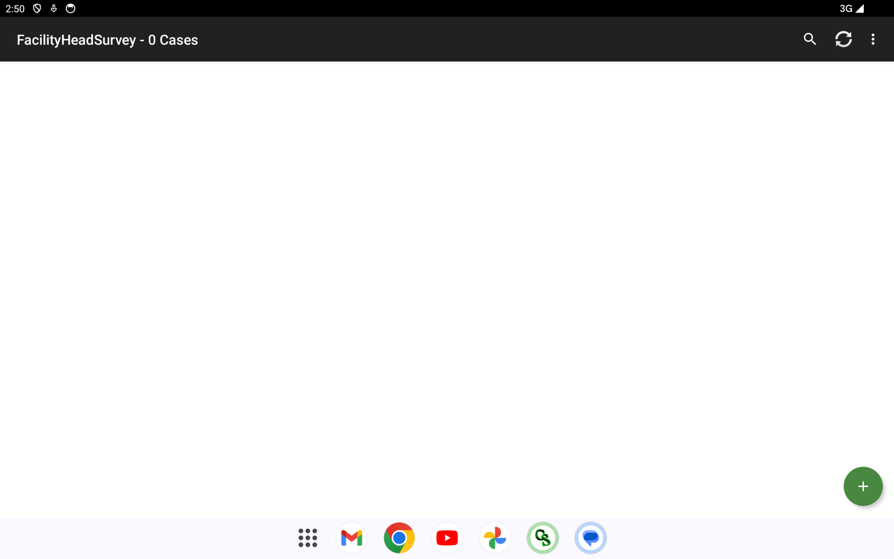
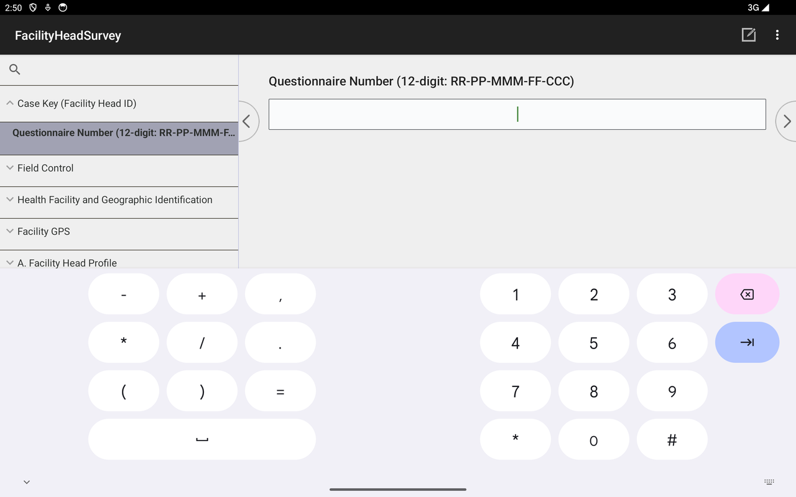
Complete question list
Every question the deployed instrument asks, grouped by section — generated from the question data so it matches the live app exactly. Click a section to expand.
Show all 203 questions — F1 — Facility Head Survey, by section
Field Control
- Survey Team Leader's Name (text)
- Enumerator's Name (text)
- Field Validated by (text)
- Field Edited by (text)
- Date First Visited the Facility (YYYYMMDD) (number)
- Date of Final Visit to the Facility (YYYYMMDD) (number)
- Total Number of Visits (number)
- Result of First Visit (select one)Completed · Postponed · Refused · Incomplete
- Result of Final Visit (select one)Completed · Postponed · Refused · Incomplete
- Language used for the interview (text)
- Region Code (PSGC) (number)
- Province / HUC Code (PSGC) (number)
- City / Municipality Code (PSGC) (number)
- Facility Number (within municipality) (number)
- Case Sequence (per-facility, per-instrument) (number)
- Region (from PSGC) (text)
- Province / HUC (from PSGC) (text)
- City / Municipality (from PSGC) (text)
Health Facility and Geographic Identification
- Classification (select one)UHC IS · Non-UHC IS
- Region (select one)(set at runtime)
- Province / HUC (select one)(set at runtime)
- City / Municipality (select one)(set at runtime)
- Barangay (select one)(set at runtime)
- Facility Name (text)
- Facility Address (text)
Facility GPS and Verification Photo
- GPS Latitude (text)
- GPS Longitude (text)
- GPS Altitude (m) (text)
- GPS Accuracy (m) (number)
- GPS Satellites (number)
- GPS Read Time (UTC) (text)
- Verification Photo Filename (text)
- Take Verification Photo (select one)Take verification photo
A. Facility Head Profile
- Respondent name and signature (text)
- Respondent position / office (text)
- Respondent email address (text)
- Respondent mobile number (text)
- 1. What is your name? (Last Name, First Name, Middle Initial, Ext) (text)
- 2. What is your official designation at this health facility? (select one)Rural / Urban Health Unit Head · Physician · Chief of Hospital · Medical Director · Hospital Administrator · Nurse · Municipal / City Health Officer · Medical Officer · Administrative Officer / Assistant · Midwife · Health Promotion / Nutrition Officer
- 3. How old are you (in years), as of your last birthday? (number)
- 4. What is your sex assigned at birth? (select one)Male · Female
- 5. In your current position, how many months/years have you worked at this health facility? Number of Years (number)
- 6. How many years have you worked in health-related position? Number of Years (number)
B. Facility Profile
- 7. What type of ownership is this hospital? (select one)Public · Private
- 8. What is the facility's service capacity level? (select one)Primary Care Facility · Level 1 Hospital · Level 2 Hospital · Level 3 Hospital
C. Universal Health Care (UHC) Implementation
- 9. Have you heard about Universal Health Care (UHC) prior to this survey? (select one)Yes · No
- 10. Does the facility have primary care packages? (select one)Yes · No
- 11. If yes, specify its implementation status relative to the UHC Act. (select one)Implemented as a direct result of the UHC Act (i.e. YAKAP/Konsulta) · Pre-existing prior to UHC but subsequently enhanced or expanded due to UHC Act · Newly implemented or improved independent of UHC Act · Not yet implemented but planned within the next 1-2 years · Other (specify) · I don't know · Not applicable
- 12. Has the facility applied for DOH primary care licensing since the UHC Act was passed in 2019 and was it a result of the UHC Act? (select one)Yes, this was implemented as a direct result of the UHC Act · Yes, this was pre-existing, but it has significantly improved due to the UHC Act · Yes, this has been implemented or improved recently, but not due to the UHC Act · Yes, other reason (specify) · No, this has not been implemented yet, but we plan to in the next 1-2 years · No, and we have no plans to do this in the next 1-2 years · No, other reason (specify) · I don't know · Not applicable
- 13. Do you have a public health unit at this facility? (select one)Yes · No · Not applicable
- 14. If yes, has the creation of a public health unit at this facility been implemented since the UHC Act was passed in 2019 and was it a result of the UHC Act? (select one)Yes, this was implemented as a direct result of the UHC Act · Yes, this was pre-existing, but it has significantly improved due to the UHC Act · Yes, this has been implemented or improved recently, but not due to the UHC Act · Yes, other reason (specify) · No, this has not been implemented yet, but we plan to in the next 1-2 years · No, and we have no plans to do this in the next 1-2 years · No, other reason (specify) · I don't know · Not applicable
- 15. What is the main role of the public health unit? (select one)Health promotion and education · Disease surveillance report · Referral and patient navigation · Alignment with national public health programs · Other (specify) · I don't know · Not applicable
- 16. Do you have a health promotion unit at this facility? (select one)Yes · No · Not applicable
- 17. If yes, has the creation of a health promotion unit at this facility been implemented since the UHC Act was passed in 2019 and was it a result of the UHC Act? (select one)Yes, this was implemented as a direct result of the UHC Act · Yes, this was pre-existing, but it has significantly improved due to the UHC Act · Yes, this has been implemented or improved recently, but not due to the UHC Act · Yes, other reason (specify) · No, this has not been implemented yet, but we plan to in the next 1-2 years · No, and we have no plans to do this in the next 1-2 years · No, other reason (specify) · I don't know · Not applicable
- 18. What is the main role of the health promotion unit? (select one)Leading health education and awareness campaigns · Conducting and coordinating health screening and promotion · Advocacy and policy formation · Resource mobilization and fundraising · Other (specify) · I don't know
- 19. Has the establishment of new roles in the facility been implemented since the UHC Act was passed in 2019 and was it a result of the UHC Act? (select one)Yes, this was implemented as a direct result of the UHC Act · Yes, this was pre-existing, but it has significantly improved due to the UHC Act · Yes, this has been implemented or improved recently, but not due to the UHC Act · Yes, other reason (specify) · No, this has not been implemented yet, but we plan to in the next 1-2 years · No, and we have no plans to do this in the next 1-2 years · No, other reason (specify) · I don't know · Not applicable
- 20. What is/are the new role/s established in this facility? (text)
- 21. Has the establishment of new departments in the facility been implemented since the UHC Act was passed in 2019 and was it a result of the UHC Act? (select one)Yes, this was implemented as a direct result of the UHC Act · Yes, this was pre-existing, but it has significantly improved due to the UHC Act · Yes, this has been implemented or improved recently, but not due to the UHC Act · Yes, other reason (specify) · No, this has not been implemented yet, but we plan to in the next 1-2 years · No, and we have no plans to do this in the next 1-2 years · No, other reason (specify) · I don't know · Not applicable
- 22. What is/are the new department/s established in this facility? (text)
- 23. Has the construction of new building/s in this health facility been implemented since the UHC Act was passed in 2019 and was it a result of the UHC Act? (select one)Yes, this was implemented as a direct result of the UHC Act · Yes, this was pre-existing, but it has significantly improved due to the UHC Act · Yes, this has been implemented or improved recently, but not due to the UHC Act · Yes, other reason (specify) · No, this has not been implemented yet, but we plan to in the next 1-2 years · No, and we have no plans to do this in the next 1-2 years · No, other reason (specify) · I don't know · Not applicable
- 24. What is/are the building/s being used for? (text)
- 25. Has the construction of new rooms in this health facility been implemented since the UHC Act was passed in 2019 and was it a result of the UHC Act? (select one)Yes, this was implemented as a direct result of the UHC Act · Yes, this was pre-existing, but it has significantly improved due to the UHC Act · Yes, this has been implemented or improved recently, but not due to the UHC Act · Yes, other reason (specify) · No, this has not been implemented yet, but we plan to in the next 1-2 years · No, and we have no plans to do this in the next 1-2 years · No, other reason (specify) · I don't know · Not applicable
- 26. What are the rooms being used for? (text)
- 27. Has the increase in equipment been implemented since the UHC Act was passed in 2019 and was it a result of the UHC Act? (select one)Yes, this was implemented as a direct result of the UHC Act · Yes, this was pre-existing, but it has significantly improved due to the UHC Act · Yes, this has been implemented or improved recently, but not due to the UHC Act · Yes, other reason (specify) · No, this has not been implemented yet, but we plan to in the next 1-2 years · No, and we have no plans to do this in the next 1-2 years · No, other reason (specify) · I don't know · Not applicable
- 28. If there was an increase in equipment, what are these pieces of equipment? (text)
- 29. Has the increase in supplies been implemented since the UHC Act was passed in 2019 and was it a result of the UHC Act? (select one)Yes, this was implemented as a direct result of the UHC Act · Yes, this was pre-existing, but it has significantly improved due to the UHC Act · Yes, this has been implemented or improved recently, but not due to the UHC Act · Yes, other reason (specify) · No, this has not been implemented yet, but we plan to in the next 1-2 years · No, and we have no plans to do this in the next 1-2 years · No, other reason (specify) · I don't know · Not applicable
- 30. If there was an increase in supplies, what are these? (text)
- 31. Has the use of electronic medical records at the facility been implemented since the UHC Act was passed in 2019 and was it a result of the UHC Act? (select one)Yes, this was implemented as a direct result of the UHC Act · Yes, this was pre-existing, but it has significantly improved due to the UHC Act · Yes, this has been implemented or improved recently, but not due to the UHC Act · Yes, other reason (specify) · No, this has not been implemented yet, but we plan to in the next 1-2 years · No, and we have no plans to do this in the next 1-2 years · No, other reason (specify) · I don't know · Not applicable
- 32. Does your facility currently submit health and financial data to the DOH Information System and/or the PhilHealth Dashboard? (select one)Yes, to DOH Information System only · Yes, to PhilHealth Dashboard only · Yes, to both DOH Information System and PhilHealth Dashboard · No, we are not submitting these data
- 33. If yes, how frequent has your facility submit these data? (select one)Weekly · Monthly · Quarterly · Semi-annually · Annually · Other (specify)
- 34. Which of the submitted reports are actually used for decision-making? (select all that apply)OPD/IPD census and morbidity reports · Maternal, newborn, child, and adolescent health (MNCAH) reports · Notifiable diseases / surveillance reports · Expenditure and budget utilization reports · PhilHealth claims and reimbursement reports · YAKAP/Konsulta utilization reports · NBB compliance reports · ZBB compliance / monitoring reports · HRH staffing and deployment reports · Medicines availability and stock status reports · Facility performance scorecards / quality reports · Other (specify)
- 35. Have there been changes in the facility staffing since 2019? (select one)Yes · No
- 36. Have the changes in staffing been implemented since the UHC Act was passed in 2019 and was it a result of the UHC Act? (select one)Yes, this was implemented as a direct result of the UHC Act · Yes, this was pre-existing, but it has significantly improved due to the UHC Act · Yes, this has been implemented or improved recently, but not due to the UHC Act · Yes, other reason (specify) · No, this has not been implemented yet, but we plan to in the next 1-2 years · No, and we have no plans to do this in the next 1-2 years · No, other reason (specify) · I don't know · Not applicable
- 37. Have there been changes in the referral system since 2019? (select one)Yes · No
- 38. Have the changes to the referral system (inbound or outbound) been implemented since the UHC Act was passed in 2019 and was it a result of the UHC Act? (select one)Yes, this was implemented as a direct result of the UHC Act · Yes, this was pre-existing, but it has significantly improved due to the UHC Act · Yes, this has been implemented or improved recently, but not due to the UHC Act · Yes, other reason (specify) · No, this has not been implemented yet, but we plan to in the next 1-2 years · No, and we have no plans to do this in the next 1-2 years · No, other reason (specify) · I don't know · Not applicable
- 39. Has the Memorandum of Understanding (MoU) / Agreement (MoA) with other health facilities as part of the healthcare provider network been implemented since the UHC Act was passed in 2019 and was it a result of the UHC Act? (select one)Yes, this was implemented as a direct result of the UHC Act · Yes, this was pre-existing, but it has significantly improved due to the UHC Act · Yes, this has been implemented or improved recently, but not due to the UHC Act · Yes, other reason (specify) · No, this has not been implemented yet, but we plan to in the next 1-2 years · No, and we have no plans to do this in the next 1-2 years · No, other reason (specify) · I don't know · Not applicable
- 40. Has the no balance billing (NBB) been implemented since the UHC Act was passed in 2019 and was it a result of the UHC Act? (select one)Yes, this was implemented as a direct result of the UHC Act · Yes, this was pre-existing, but it has significantly improved due to the UHC Act · Yes, this has been implemented or improved recently, but not due to the UHC Act · Yes, other reason (specify) · No, this has not been implemented yet, but we plan to in the next 1-2 years · No, and we have no plans to do this in the next 1-2 years · No, other reason (specify) · I don't know · Not applicable
- 41. Has the zero balance billing (ZBB) been implemented since the UHC Act was passed in 2019 and was it a result of the UHC Act? (select one)Yes, this was implemented as a direct result of the UHC Act · Yes, this was pre-existing, but it has significantly improved due to the UHC Act · Yes, this has been implemented or improved recently, but not due to the UHC Act · Yes, other reason (specify) · No, this has not been implemented yet, but we plan to in the next 1-2 years · No, and we have no plans to do this in the next 1-2 years · No, other reason (specify) · I don't know · Not applicable
- 42. Has the no co-payment policy been implemented since the UHC Act was passed in 2019 and was it a result of the UHC Act? (select one)Yes, this was implemented as a direct result of the UHC Act · Yes, this was pre-existing, but it has significantly improved due to the UHC Act · Yes, this has been implemented or improved recently, but not due to the UHC Act · Yes, other reason (specify) · No, this has not been implemented yet, but we plan to in the next 1-2 years · No, and we have no plans to do this in the next 1-2 years · No, other reason (specify) · I don't know · Not applicable
- 43. Has the health facility been implementing ward accommodation allocation since the UHC Act was passed in 2019 and was it a result of the UHC Act? (select one)Yes, this was implemented as a direct result of the UHC Act · Yes, this was pre-existing, but it has significantly improved due to the UHC Act · Yes, this has been implemented or improved recently, but not due to the UHC Act · Yes, other reason (specify) · No, this has not been implemented yet, but we plan to in the next 1-2 years · No, and we have no plans to do this in the next 1-2 years · No, other reason (specify) · I don't know · Not applicable
- 44. Have the improved clinical practice guidelines been implemented since the UHC Act was passed in 2019 and was it a result of the UHC Act? (select one)Yes, this was implemented as a direct result of the UHC Act · Yes, this was pre-existing, but it has significantly improved due to the UHC Act · Yes, this has been implemented or improved recently, but not due to the UHC Act · Yes, other reason (specify) · No, this has not been implemented yet, but we plan to in the next 1-2 years · No, and we have no plans to do this in the next 1-2 years · No, other reason (specify) · I don't know · Not applicable
- 45. Have the DOH licensing standards been implemented since the UHC Act was passed in 2019 and was it a result of the UHC Act? (select one)Yes, this was implemented as a direct result of the UHC Act · Yes, this was pre-existing, but it has significantly improved due to the UHC Act · Yes, this has been implemented or improved recently, but not due to the UHC Act · Yes, other reason (specify) · No, this has not been implemented yet, but we plan to in the next 1-2 years · No, and we have no plans to do this in the next 1-2 years · No, other reason (specify) · I don't know · Not applicable
- 46. Have the PhilHealth accreditation requirements been implemented since the UHC Act was passed in 2019 and was it a result of the UHC Act? (select one)Yes, this was implemented as a direct result of the UHC Act · Yes, this was pre-existing, but it has significantly improved due to the UHC Act · Yes, this has been implemented or improved recently, but not due to the UHC Act · Yes, other reason (specify) · No, this has not been implemented yet, but we plan to in the next 1-2 years · No, and we have no plans to do this in the next 1-2 years · No, other reason (specify) · I don't know · Not applicable
- 47. Have the service delivery protocols been implemented since the UHC Act was passed in 2019 and was it a result of the UHC Act? (select one)Yes, this was implemented as a direct result of the UHC Act · Yes, this was pre-existing, but it has significantly improved due to the UHC Act · Yes, this has been implemented or improved recently, but not due to the UHC Act · Yes, other reason (specify) · No, this has not been implemented yet, but we plan to in the next 1-2 years · No, and we have no plans to do this in the next 1-2 years · No, other reason (specify) · I don't know · Not applicable
- 48. Have the primary care quality measures been implemented since the UHC Act was passed in 2019 and was it a result of the UHC Act? (select one)Yes, this was implemented as a direct result of the UHC Act · Yes, this was pre-existing, but it has significantly improved due to the UHC Act · Yes, this has been implemented or improved recently, but not due to the UHC Act · Yes, other reason (specify) · No, this has not been implemented yet, but we plan to in the next 1-2 years · No, and we have no plans to do this in the next 1-2 years · No, other reason (specify) · I don't know · Not applicable
- 49. What are the major challenges to improving the quality of patient care in your local area? (select one)Limited resources (personnel, equipment, supplies, funding) · Challenging quality standards · Healthcare decisions made by LGUs not the facility · Lack of specific healthcare skills · Inadequate training of healthcare workers · Lack of patient awareness of UHC benefits · Limited accessibility of public healthcare facilities · Infrastructure not conducive for patient care · I don't know · Other (specify)
- 50. What are the major challenges to improving the accessibility of patient care in your local area? (select one)Limited resources (personnel, equipment, supplies, funding) · Challenging quality standards · Healthcare decisions made by LGUs not the facility · Lack of specific healthcare skills · Inadequate training of healthcare workers · Lack of patient awareness of UHC benefits · Limited accessibility of public healthcare facilities · Infrastructure not conducive for patient care · I don't know · Other (specify)
D. YAKAP / Konsulta Package
- 51. Are you currently an accredited YAKAP/Konsulta provider? (select one)Yes · No
- 52. If yes, since when? Month (number)
- 53. If accredited, which of the following are included in the YAKAP/Konsulta package? (select one)Pap smear · Mammogram · Lipid profile · Thyroid function test · Chest X-ray · Low-dose CT scan · Dental services · All of the above · I don't know · Other (specify)
- 54. Is it possible to register individual patients to YAKAP/Konsulta at this facility? (select one)Yes · No · I don't know
- 55. Is it possible to register whole families to YAKAP/Konsulta at this facility? (select one)Yes · No · I don't know
- 56. Is it only possible to register both individual patients and their family members together to YAKAP/Konsulta at this facility? (select one)Yes · No · I don't know
- 57. Based on your knowledge, what is the capitation amount of the YAKAP/Konsulta package? (Capitation is the amount per year per registered patient for delivering the YAKAP/Konsulta package services.) (number)
- 58. What are the performance indicators you need to meet to receive the second tranche payment? (select one)Beneficiaries consulted a primary care doctor · Utilization of laboratory services · Beneficiaries received antibiotics as prescribed · Beneficiaries received NCD medicine as prescribed · No requirements · 1st patient encounter · I don't know · Other (specify)
- 59. Do you know how often you can expect to receive payments from PhilHealth for the delivery of the YAKAP/Konsulta package? (select one)Yes · No
- 60. How often should you be receiving payments? (select one)Monthly · Quarterly · Semi-annually · Annually
- 61. Were there delays in receiving capitation tranches? (select one)Yes · No
- 62. On average, how long is the typical time interval between tranches releases to the facility? (select one)Less than a month · 1-2 months · 3-4 months · 5-6 months · More than six months
- 63. How many days did you wait from application submission to accreditation approval? [PENDING DESIGN: printed text says days, buckets are months] (select one)Less than a month · 1-2 months · 3-4 months · 5-6 months · More than six months
- 64. Why did you apply to become a YAKAP/Konsulta provider? (select all that apply)Incentives (capitation/payment for registered patients) · Aligns with facility's mission · Encouraged by LGU · Mandated/required by DOH/UHC · To improve facility services · Other (specify)
- 65. Which of the following requirements were difficult to comply with for accreditation? (select all that apply)Ability to conduct preventive/screening services and health education · Capability to provide laboratory and radiologic services · Capability to dispense required medicines · General Infrastructure · Equipment and Supplies · Human resource · Functional Health Information System · Documentary requirements · DOH licensing requirements · None of the above
- 66. Why was it difficult to comply with the following? Ability to conduct preventive/screening services and health education (select all that apply)Not enough budget / too expensive · Time-consuming · Limited human resources · Legal processes · Compiling documentary requirements · Stringent standards · Other (specify)
- 67. Why was it difficult to comply with the following? Capability to provide services for required laboratory and radiologic services (select all that apply)Not enough budget / too expensive · Time-consuming · Limited human resources · Legal processes · Compiling documentary requirements · Stringent standards · Other (specify)
- 68. Why was it difficult to comply with the following? Capability to dispense required medicines (select all that apply)Not enough budget / too expensive · Time-consuming · Limited human resources · Legal processes · Compiling documentary requirements · Stringent standards · Other (specify)
- 69. Why was it difficult to comply with the following? General Infrastructure (select all that apply)Not enough budget / too expensive · Time-consuming · Limited human resources · Legal processes · Compiling documentary requirements · Stringent standards · Other (specify)
- 70. Why was it difficult to comply with the following? Equipment and Supplies (select all that apply)Not enough budget / too expensive · Time-consuming · Limited human resources · Legal processes · Compiling documentary requirements · Stringent standards · Other (specify)
- 71. Why was it difficult to comply with the following? Human resource (select all that apply)Not enough budget / too expensive · Time-consuming · Limited human resources · Legal processes · Compiling documentary requirements · Stringent standards · Other (specify)
- 72. Why was it difficult to comply with the following? Functional Health Information System (select all that apply)Not enough budget / too expensive · Time-consuming · Limited human resources · Legal processes · Compiling documentary requirements · Stringent standards · Other (specify)
- 73. Why was it difficult to comply with the following? Documentary requirements (select all that apply)Not enough budget / too expensive · Time-consuming · Limited human resources · Legal processes · Compiling documentary requirements · Stringent standards · Other (specify)
- 74. Why was it difficult to comply with the following? DOH Licensing requirements (select all that apply)Not enough budget / too expensive · Time-consuming · Limited human resources · Legal processes · Compiling documentary requirements · Stringent standards · Other (specify)
- 75. Based on your understanding, whose responsibility is it to enroll patients to YAKAP/Konsulta? (select all that apply)Patients' own initiative · Facility · LGU · Someone else · PhilHealth · I don't know · Other (specify)
- 76. Which of the following initiatives are you doing to enroll patients in this facility to YAKAP/Konsulta? (select all that apply)On-site Enrollment · LGU Outreach · Facility Outreach · Barangay Health Workers (BHWs) Support · Information Campaigns · Local Health Insurance Offices (LHIO) / YAKAP caravans · Coordination with other government agencies and private sector · No initiatives · Other (specify)
- 77. Did you experience any challenges in enrolling patients to YAKAP/Konsulta? (select one)Yes · No
- 78. What are the challenges you have faced? (select all that apply)Lack of patient awareness · Lack of patient willingness · Lack of resources (manpower) · Competition with other health facilities · Technical / system issues of PhilHealth · Other (specify)
- 79. If not YAKAP/ KONSULTA accredited, why are you not accredited? (select all that apply)Difficult process · No time · Ongoing application · Other (specify)
- 80. Are you intending to become a YAKAP/Konsulta provider? (select one)Yes, already in process · Yes, not yet in process · No, decided not to · No, tried and failed · No, haven't thought about it yet · I don't know
- 81. If you decide to apply today, would you know how to start the process? (select one)Yes · No
- 82. What was the deciding factor not to apply? (text)
- 83. What went wrong with the application? (text)
- 84. What are some challenges in the process, if any? (text)
- 85. What areas do you consider as the facility's catchment area/s? (text)
- 86. How many patients in your catchment area are eligible to register to this YAKAP/Konsulta provider? (number)
- 87. How many eligible patients in your catchment area are already registered to this YAKAP/Konsulta provider? (number)
- 88. The maximum per capita rate for YAKAP/Konsulta is Php 1,700 across private and public facilities (40% after first patient encounter, 60% based on registered catchment population by December). Based on your practice, is this enough? (select one)Yes · No · I don't know
- 89. Did you go through a costing exercise to figure out if this was viable for your facility? (select one)Yes · No · I don't know
- 90. Did the costing exercise show that Php 1,700 was viable for your facility? (select one)Yes · No · I don't know
- 91. What would be the minimum acceptable capitation value per patient per year for you as a YAKAP/Konsulta provider? (number)
- 92. What would be the minimum acceptable capitation value per patient per year for you to consider being a YAKAP/Konsulta provider? (number)
- 93. Does your facility charge additional capitation fees? (select one)Yes · No
- 94. What is/are the reason/s for the facility to charge additional capitation fees? (select all that apply)Cover building maintenance, equipment, non-clinical staff · Patient care costs exceed predetermined fixed payment · Services excluded from capitation coverage · Provide preventive care not adequately compensated · Offset losses · Other (specify)
- 95. Have you already received payments for patients enrolled? (select one)Yes, received all expected payments · Yes, received some but not all expected · No, have not received any expected payments · No, have not expected any payments yet
- 96. Why not? (select all that apply)Delays in PhilHealth processing · Delays in facility's tracking of patient enrollment · Difficulties verifying patient enrollment (PhilHealth) · Facility not active in meeting payment criteria · Criteria for payments is unclear · I don't know · Other (specify)
- 97. Did you face any challenges in getting these payments? (select one)Yes · No
- 98. What were these challenges? (select all that apply)Delayed payment process · Unclear criteria for capitation · Difficult to meet criteria for capitation · PhilHealth process to apply for payments is difficult/unclear · I don't know · Other (specify)
- 99. If you were to expand the YAKAP/Konsulta package, what would you expand next? (select all that apply)Current list of medicines and drugs · Current laboratory/diagnostic services · Additional features · I don't know · Other (specify)
- 100. What additional features would you add? (text)
E. Awareness on Expanded Health Programs (BUCAS and GAMOT)
- 101. Have you heard about the Bagong Urgent Care and Ambulatory Service (BUCAS)? (select one)Yes · No
- 102. Do you have a BUCAS Center? (select one)Yes · No · I don't know
- 103. If none, what is the primary reason? (select one)Proposal not yet submitted · Limited information on establishment process · Did not meet standard requirements · Awaiting assessment or approval · Other (specify) · Not applicable
- 104. What are the available services offered by your BUCAS Center? (select all that apply)Urgent care and consultation · Minor surgical procedures · Diagnostic and laboratory services · Reproductive and special health services · Other (specify)
- 105. In your assessment, what are the main factors affecting the utilization of BUCAS in your facility? (select all that apply)Patient awareness · Facility location and accessibility · Referral patterns · PhilHealth coverage and reimbursement · Availability of staff/services · Other (specify)
- 106. What are the resources you need to support/sustain the BUCAS center? (text)
- 107. Based on your experience, does the BUCAS Center decongest your health facility of patients? (select one)Yes · No
- 108. Have you heard about the Guaranteed and Accessible Medications for Outpatient Treatment (GAMOT) package? (select one)Yes · No
- 109. Is your facility an accredited GAMOT provider? (select one)Yes · No
- 110. If no, what is the primary reason? (select one)Application not yet submitted · Limited information on accreditation process · Did not meet accreditation requirements · Awaiting assessment or approval · Other (specify) · Not applicable
- 111. In your assessment, what are the main factors affecting the utilization of the GAMOT Program in your facility? (select all that apply)Availability of GAMOT medicines · Pharmacy capacity · Patient awareness of the program · PhilHealth eligibility and reimbursement processes · Prescribing practices of physicians · Other (specify)
- 112. In the past 3 months, has this facility experienced a stock-out (zero supply) of any tracer essential medicines? (select one)Yes · No
- 113. What specific medicines? (antihypertensives, antibiotics, etc.) (text)
- 114. How many days did the stock-out last? (select one)Less than 30 days · 31-60 days · More than 60 days
- 115. On average, how many months do these stock-outs last? (select one)Less than a month · 1-2 months · 3-4 months · 5-6 months · More than 6 months
- 116. Did you do anything to address the medicine stock-outs in the GAMOT Package? (select one)Yes · No · Did not experience stock outs of GAMOT meds
- 117. If yes, what did you do to address the medicine stock-outs in the GAMOT Package? (select all that apply)Resorted to alternative procurement · Active inventory monitoring · Improve forecasting and quantification · Other (specify)
F. DOH Licensing: Status and Barriers
- 118. Is this facility DOH licensed? (select one)Yes · No · No, but submitted requirements and waiting · I don't know what DOH licensing is
- 119. When did you receive your DOH license from your most recent application? (select one)Within the last 1 to 3 months · Within the last 4 to 6 months · Over 6 months but within 1 year · More than 1 year ago · I don't know
- 120. How many days did it take you to receive the license? (select one)Less than 30 days · 31-60 days · More than 60 days
- 121. Which of the following requirements were difficult to comply with in the DOH licensing process? (select all that apply)Patient rights and organization ethics · Patient care · Leadership and management · Human resource management · Information management · Safe practice and environment · Improving performance · Physical plant · Equipment and instruments · National laws and DOH issuances (hospitals only) · Emergency cart contents (hospitals only) · Add-on services (hospitals only) · Public access to price information (PCF only) · None of the above
- 122. Why was it difficult to comply with the following? Patient rights and organization ethics (select all that apply)Not enough budget / too expensive · Time-consuming · Limited human resources · Legal processes · Compiling documentary requirements · Stringent standards · Lack of training · Lack of space · Other (specify)
- 123. Why was it difficult to comply with the following? Patient care (select all that apply)Not enough budget / too expensive · Time-consuming · Limited human resources · Legal processes · Compiling documentary requirements · Stringent standards · Lack of training · Lack of space · Other (specify)
- 124. Why was it difficult to comply with the following? Leadership and management (select all that apply)Not enough budget / too expensive · Time-consuming · Limited human resources · Legal processes · Compiling documentary requirements · Stringent standards · Lack of training · Lack of space · Other (specify)
- 125. Why was it difficult to comply with the following? Human resource management (select all that apply)Not enough budget / too expensive · Time-consuming · Limited human resources · Legal processes · Compiling documentary requirements · Stringent standards · Lack of training · Lack of space · Other (specify)
- 126. Why was it difficult to comply with the following? Information management (select all that apply)Not enough budget / too expensive · Time-consuming · Limited human resources · Legal processes · Compiling documentary requirements · Stringent standards · Lack of training · Lack of space · Other (specify)
- 127. Why was it difficult to comply with the following? Safe practice and environment (select all that apply)Not enough budget / too expensive · Time-consuming · Limited human resources · Legal processes · Compiling documentary requirements · Stringent standards · Lack of training · Lack of space · Other (specify)
- 128. Why was it difficult to comply with the following? Improving performance (select all that apply)Not enough budget / too expensive · Time-consuming · Limited human resources · Legal processes · Compiling documentary requirements · Stringent standards · Lack of training · Lack of space · Other (specify)
- 129. Why was it difficult to comply with the following? Physical plant (select all that apply)Not enough budget / too expensive · Time-consuming · Limited human resources · Legal processes · Compiling documentary requirements · Stringent standards · Lack of training · Lack of space · Other (specify)
- 130. Why was it difficult to comply with the following? Public access to price information (select all that apply)Not enough budget / too expensive · Time-consuming · Limited human resources · Legal processes · Compiling documentary requirements · Stringent standards · Lack of training · Lack of space · Other (specify)
- 131. Why was it difficult to comply with the following? Equipment and instruments (select all that apply)Not enough budget / too expensive · Time-consuming · Limited human resources · Legal processes · Compiling documentary requirements · Stringent standards · Lack of training · Lack of space · Other (specify)
- 132. Why was it difficult to comply with the following? National laws and DOH issuances implemented in hospitals and other health facilities (select all that apply)Not enough budget / too expensive · Time-consuming · Limited human resources · Legal processes · Compiling documentary requirements · Stringent standards · Lack of training · Lack of space · Other (specify)
- 133. Why was it difficult to comply with the following? Emergency Cart Contents (select all that apply)Not enough budget / too expensive · Time-consuming · Limited human resources · Legal processes · Compiling documentary requirements · Stringent standards · Lack of training · Lack of space · Other (specify)
- 134. Why was it difficult to comply with the following? Add-on services (select all that apply)Not enough budget / too expensive · Time-consuming · Limited human resources · Legal processes · Compiling documentary requirements · Stringent standards · Lack of training · Lack of space · Other (specify)
G. Service Delivery Process
- 135. Do you currently implement the "no balance billing" policy for your patients? (select one)Yes · No
- 136. Are you able to implement it for all patients, to the best of your knowledge, for the last 6 months? (select one)Yes · No
- 137. In your view, what are some of the barriers to implementing the no balance billing (NBB) policy? (select all that apply)Complying with no fees for basic/ward accommodation · Complying with prescribed allocation ratio (basic vs non-basic) · Patients do not go through the process of availing it · Insufficient PhilHealth support value · Insufficient other sources (MAIFIP, DSWD, PCSO) · PhilHealth delayed payment · None of the above · Other (specify)
- 138. Do you currently implement the "Zero Balance Billing" policy for your patients? (select one)Yes · No
- 139. If currently implementing ZBB, are you able to implement it for all patients, to the best of your knowledge, for the last six months? (select one)Yes · No
- 140. In your view, what are some of the barriers to implementing the "zero balance billing" policy? (select all that apply)Complying with no fees for basic/ward accommodation · Complying with prescribed allocation ratio (basic vs non-basic) · Patients do not go through the process of availing it · Insufficient PhilHealth support value · Insufficient other sources (MAIFIP, DSWD, PCSO) · PhilHealth delayed payment · None of the above · Other (specify)
- 141. Does the facility allow out-of-pocket (OOP) expenses for basic accommodation? (select one)Yes · No
- 142. Why does the facility allow OOP expenses for basic accommodation? Specify your reason. (text)
- 143. Which of the UHC benefits do you find most difficult to implement? (select one)PhilHealth/financial protection benefits · Establishment of health care provider networks (HCPNs / referral system) · Human resources for health reforms · Other (specify)
- 144. Why is this difficult to implement? (select all that apply)UHC implementation heavily reliant on LGU decisions · Not enough funding/budget · Technical/system issues of PhilHealth · Other (specify)
- 145. Has the facility been providing medical social welfare or assistance (e.g., through Malasakit Centers, MAIFIP)? (select one)Yes · No
- 146. Why is the facility providing medical social welfare or assistance through Malasakit Centers or MAIFIP? (select all that apply)Streamline access to medical and financial aid for indigent patients · Reduce out-of-pocket expenses · Eliminate the need to travel to multiple government agencies · Foster a more compassionate approach to healthcare · Other (specify)
- 147. Why is the facility not providing medical social welfare or assistance through Malasakit Centers or MAIFIP? (select all that apply)Limited budget · Stringent eligibility requirements · Incomplete documentation from patients · High patient volume / service bottlenecks · Other (specify)
- 148. Do you receive any support from your LGU to implement UHC reforms? (select one)Yes · No
- 149. What forms of support do you receive? (select all that apply)Financial assistance · Technical assistance · Medical supplies and equipment · Manpower support · Other (specify)
- 150. Are you satisfied with the support you receive from your LGU? (select one)Yes · No
- 151. Why not? (select all that apply)Insufficient · Hard to coordinate · Support given is not aligned with the needs · I don't know · Other (specify)
- 152. How clear are the protocols regarding which decisions require Provincial Health Office approval versus those you can decide at the facility level? (select one)Very Clear · Clear · Neither · Unclear · Very Unclear
- 153. Which specific protocol that you consider as unclear? (text)
- 154. In the past 6 months, how many patients were referred to a higher-level facility within the referral network? (number)
- 155. What are the most common ways you send referrals to higher level facilities/specialists? (select all that apply)Physical referral slip · E-referral · Referring facility calls receiving facility · Other (specify)
- 156. What type of referral form do you use to send to higher level facilities? (select all that apply)DOH standard referral form · Facility's standard referral form · Province's standard referral form · City / LGU standard referral form · No standard referral form · Other (specify)
- 157. Do you have a network of specialist providers to refer patients to, if needed? (select one)Yes · No · I've never heard of it · I don't know
- 158. Considering all patients who come to your facility for the past 6 months, what is the proportion of patients referred by another facility compared to those who self-refer/walk-in? (select one)Almost all patients are referred, very few walk-in · Majority referred, some walk-in · Proportion of referrals about equal to walk-ins · Majority walk-in, some referred · Almost all walk-in, very few referred · Unsure about the typical ratio
- 159. Of those referred, which of the following are the most common ways you receive referrals from lower-level health facilities? (select all that apply)Physical referral slip · E-referral · Referring facility calls receiving facility · Other (specify)
- 160. Where do your patients go to get the services not available at this facility? (select all that apply)External laboratory · Other private facility · Other public facility · I don't know · Other (specify)
- 161. How would you rate your satisfaction with your current referral system? (select one)Very Satisfied · Satisfied · Neither · Dissatisfied · Very Dissatisfied
- 162. Why are you not satisfied with the current referral system? (select all that apply)Facilities overcrowded / do not accept our patient referrals · Referral process is slow · Poor coordination between facilities · Other (specify)
H. Human Resources for Health
- 163. What challenges in human resources do you have? (select all that apply)Understaffing · Skills mismatch / lack of skills · Retention / high staff turnover · I don't know · Other (specify)
- 164. What area do you find the most room for improvement in your staff? (text)
- 165. What forms of professional development do you provide to your doctors? (select all that apply)Clinical audits · Surgical audits · Quality assurance meetings · Seminars, conferences, workshops · Independent professional development: scholarships · Independent professional development: research grants · LGU/DOH led workshops/initiatives · No forms of professional development are provided · Other (specify)
- 166. What forms of professional development do you provide to your nurses? (select all that apply)Quality assurance meetings · Seminars, conferences, workshops · Independent professional development: scholarships · Independent professional development: research grants · LGU/DOH led workshops/initiatives · No forms of professional development are provided · Other (specify)
F4 — Household Survey
Household-level interview on UHC awareness and access.
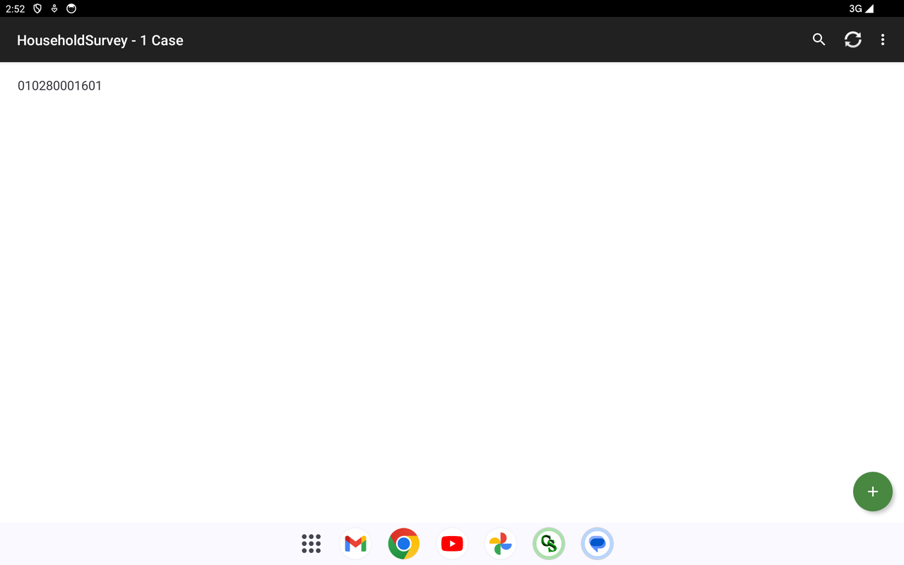
Complete question list
Every question the deployed instrument asks, grouped by section — generated from the question data so it matches the live app exactly. Click a section to expand.
Show all 237 questions — F4 — Household Survey, by section
Field Control
- Survey Team Leader's Name (text)
- Enumerator's Name (text)
- Field Validated by (text)
- Field Edited by (text)
- Date First Visited the Household (YYYYMMDD) (number)
- Date of Final Visit to the Household (YYYYMMDD) (number)
- Total Number of Visits (number)
- Result of First Visit (select one)Completed · Postponed · Incomplete · Withdraw Participation/Consent
- Result of Final Visit (select one)Completed · Postponed · Incomplete · Withdraw Participation/Consent
- Language used for the interview (text)
- Region Code (PSGC) (number)
- Province / HUC Code (PSGC) (number)
- City / Municipality Code (PSGC) (number)
- Facility Number (within municipality) (number)
- Case Sequence (per-facility, per-instrument) (number)
- Region (from PSGC) (text)
- Province / HUC (from PSGC) (text)
- City / Municipality (from PSGC) (text)
Household Geographic Identification
- Classification (select one)UHC IS · Non-UHC IS
- Region (select one)(set at runtime)
- Province / HUC (select one)(set at runtime)
- City / Municipality (select one)(set at runtime)
- Barangay (select one)(set at runtime)
- Household Address (text)
- Parent F3 Patient Case Sequence (number)
- GPS Latitude (text)
- GPS Longitude (text)
- GPS Altitude (m) (text)
- GPS Accuracy (m) (number)
- GPS Satellites (number)
- GPS Read Time (UTC) (text)
Case Verification Photo
- Verification Photo Filename (text)
- Take Verification Photo (select one)Take verification photo
A. Introduction and Informed Consent
- 1. Before we begin, to confirm, are you the household head? (select one)Yes · No
B. Respondent Profile
- Name: (Last Name, First Name, MI, Extension) (text)
- 2. In what month were you born? (number)
- 3. What is your sex at birth? (select one)Male · Female
- 4. Are you part of the LGBTQIA+ community? (e.g., gay, lesbian, bisexual, etc.). It is fine if you are not comfortable answering. (select one)Yes · No · Not Comfortable to Answer · Don't Know · Refused to answer
- 5. Which group do you identify with? It is fine if you are not comfortable answering. (select one)Lesbian · Gay · Bisexual · Transgender · Queer · Intersex · Asexual · Other (specify)
- 6. What is your civil status? (select one)Single / Never Married · Married · Common law / Live-in · Widowed · Divorced · Separated · Annulled · Not reported
- 7. Do you identify as a person with a disability? (select one)Yes · No
- 8. Would you like to specify the type of disability? (select one)Yes · No
- 9. May we view your PWD Identification Card? (select one)Yes (card was presented and verified) · No (card not available at the time of interview) · Respondent refused to present card
- 10. Based on the presented PWD Identification Card, what type of disability is indicated? (select one)Physical disability (Orthopedic) · Visual disability · Hearing disability · Speech impairment · Intellectual disability · Psychosocial disability · Multiple disabilities · Other disability (specify)
- 11. What is the highest level of education you have attained? (select one)Early Childhood Education (Pre-school) · Primary Education (Grade 1 to 6) · Lower Secondary Education (Grade 7 to 10) · Upper Secondary Education (Grade 11 to 12) · Post-Secondary Non-Tertiary Education (including Technical and Vocational degrees with a certificate) · Short-Cycle Tertiary Education or Equivalent (including Technical and Vocational degrees with a diploma) · Bachelor Level Education or Equivalent · Master Level Education or Equivalent · Doctoral Level Education or Equivalent · No schooling · Other (specify) · I don't know · Not applicable
- 12. What is your employment status? (select one)Has a permanent job/ own business · Has a short-term, seasonal, casual job/business · Worked on different jobs day to day per week · Unemployed and looking for work · Unemployed and not looking for work · Retired · I don't know · Not applicable
- 13. What is your main source of income? (select one)Working for private company · Working for private household · Working for government · Worked with pay in own family business or farm · Self-employed without any paid employee · Employer in own family business · Worked without pay in own family business or farm · Pension · Unemployed and looking for work · Unemployed and not looking for work · I don't know
- 14. Are you a member of Indigenous People (IP) community, like the Igorot, Lumad, Mangyans, etc.? (select one)Yes · No
- 15. If yes, which group? (text)
- 16. Is your household a beneficiary of the Pantawid Pamilyang Pilipino Program (4Ps)? (select one)Yes · No
- 17. Who takes the most responsibility for making the decisions regarding healthcare in your household? (select one)Me (respondent) · My father · My mother · My parents · My spouse/partner · My spouse/partner and I · My sibling · My grandfather · My grandmother · My uncle · My aunt · Other (specify)
- 18. In the past 6 months, what is your average monthly household income? Approximate amount (Philippine pesos). (number)
- 19. How many total individuals (including children) live in your house now? (number)
- 20. How many non-working age children (i.e., below the age of 18) live in your house now? (number)
- 21. How many senior citizens live in your house now? (number)
- 22. Do you have electricity in your household? (select one)Yes · No
- 23. What is the family's main source of water supply for daily use? (select one)Faucet inside the house · Tubed/piped well · Dug well · Other (specify)
- 24. Do you have your own faucet, or do you share with your community? (select one)I/we have our own · I/we share with our community
- 25. Do you have your own tube/pipe, or do you share with your community? (select one)I/we have our own · I/we share with our community
- 26. Does the family own a refrigerator/freezer? (select one)Yes, I/ we have · No, I/we don't have
- 27. Does the family own a television set? (select one)Yes, I/ we have · No, I/we don't have
- 28. Does the family own a washing machine? (select one)Yes, I/ we have · No, I/we don't have
- 29. How would the socioeconomic class of your household be classified? (select one)Class A or B (working professionals or with a business with several assets) · Class C (working professionals with permanent or semi-permanent income and some assets) · Class D or E (semi-permanent workers or informal sector workers with little to no assets) · I don't know
C. Household Roster and Characteristics
- Household Member Line Number (number)
- 30. Name (LAST NAME, FIRST NAME & MIDDLE NAME, EXT) (text)
- 31. HH member present or away (select one)Away · Present
- 32. Age (as of last birthday) (number)
- 33. Sex at birth (select one)Male · Female
- 34. Relationship to Household Head (select one)Head · Spouse/Partner · Son/Daughter · Brother/Sister · Son-In-Law/Daughter-In-Law · Grandson/Granddaughter · Father/Mother · Nephew/Niece · Cousin · Boarder · Domestic Helper · Non-relative
- 35. Do you identify as a person with a disability? (select one)No · Yes
- 36. Would you like to specify the type of disability? (select one)No · Yes
- 37. May we view the patient's PWD Identification Card? (select one)No · Yes · Respondent refused to present card
- 38. Based on the presented PWD Identification Card, what type of disability is indicated? (select one)Physical disability (Orthopedic) · Visual disability · Hearing disability · Speech impairment · Intellectual disability · Psychosocial disability · Multiple disabilities · Other disability (specify)
- 39. Civil Status (select one)Single / Never Married · Married · Common law / Live-in · Widowed · Divorced · Separated · Annulled · Not reported
- 40. Highest level of education completed (select one)Early Childhood Education (Pre-school) · Primary Education (Grade 1 to 6) · Lower Secondary Education (Grade 7 to 10) · Upper Secondary Education (Grade 11 to 12) · Post-Secondary Non-Tertiary Education (including Technical and Vocational degrees with a certificate) · Short-Cycle Tertiary Education or Equivalent (including Technical and Vocational degrees with a diploma) · Bachelor Level Education or Equivalent · Master Level Education or Equivalent · Doctoral Level Education or Equivalent · No schooling
- 41. Employment Status (select one)Has a permanent job/ own business · Has a short-term, seasonal, casual job/business · Worked on different jobs day to day per week · Unemployed and looking for work · Unemployed and not looking for work · Retired · I don't know · Not applicable
- 42. Is (NAME) covered by GSIS either as a member or dependent? (select one)Yes · No · I don't know
- 43. Is (NAME) covered by SSS either as a member or dependent? (select one)Yes · No · I don't know
- 44. Is (NAME) covered by Pag-ibig either as a member or dependent? (select one)Yes · No · I don't know
- 45. Currently registered with PhilHealth? (select one)Yes · No · I don't know
- 46. What is his/her membership category? (Only answer if 'Yes' in Q45) (select one)Formal economy · Informal economy · Indigent · Sponsored · Lifetime member · Senior citizen · Overseas Filipino Worker (OFW) · Qualified dependents · Dependent · Other (Specify) · I don't know
- 48. Name (First Name Only) (text)
- 49. Is (NAME) covered by a private health insurance either as a member or dependent? (Example: Maxicare, Intellicare, Pacific Cross Health Care) (select one)Yes · No · I don't know
- 50. Others (Specify) (text)
C. Household Private Insurance Gate (Q47)
- 47. Do you or other members of your HH have private insurance? (select one)Yes · No
D. Awareness on Universal Health Care (UHC)
- 51. Have you heard about Universal Health Care (UHC) prior to this survey? (select one)Yes · No
- 52. What is your source of information about UHC? (select all that apply)News · Legislation · Social Media · Friends / Family · Health center/facility · LGU/Barangay · I don't know · Other (Specify)
- 53. What is your understanding about UHC? (select all that apply)Protection from financial risk/decreased out-of-pocket spending · Access to quality and affordable health care goods and services · Automatic enrollment into PhilHealth · Primary care provider for every Filipino · I don't know · Other (Specify)
E. YAKAP/Konsulta Awareness
- 54. Have you heard of the term "YAKAP/Konsulta package"? (select one)Yes · No
- 55. What are your sources of information about the YAKAP/Konsulta package? (select all that apply)News · Legislation · Social Media · Friends / Family · Health center/facility · LGU/Barangay · I don't know · Other (Specify)
- 56. What is your understanding about the YAKAP/Konsulta package? (select all that apply)Free primary care consultation (with a registered YAKAP/Konsulta provider) · Free health risk screening and assessment (with a registered YAKAP/Konsulta provider) · Free selected laboratory / diagnostics examination · Free selected drugs and medicines · There are no benefits in the package · I don't know · Other (Specify)
F. Bagong Urgent Care and Ambulatory Service (BUCAS) Awareness and Utilization
- 57. Have you heard about Bagong Urgent Care and Ambulatory Service (BUCAS) center? (select one)Yes · No
- 58. If yes, what are your sources of information about this BUCAS center? (select all that apply)News · Legislation · Social Media · Friends / Family · Health center/facility · LGU/Barangay · I don't know · Other (Specify)
- 59. What is your understanding about a BUCAS center? (select all that apply)Provides urgent care for non-life-threatening/serious conditions · Offers outpatient and ambulatory health services · Helps reduce overcrowding in hospitals · Allows access to timely medical consultation and treatment · Other (specify)
- 60. In the last six months, did you or any member of your HH accessed the services in a BUCAS center? (select one)Yes · No
- 61. If yes, which of the services did you avail? (select all that apply)Medical consultation for urgent or minor conditions · Outpatient or ambulatory care services · Basic diagnostic services (e.g., laboratory tests, X-ray) · Minor procedures or treatments · Referral to higher-level health facilities · I don't know · Other (specify)
G. Access to Medicines
- 62. How often do you purchase or receive medicines? (select one)Weekly · Bi-weekly · Monthly · Rarely · Never
- 63. Was the most recent medicine purchased prescribed by a doctor or over-the-counter (OTC) medicine (no need for a prescription)? (select one)Prescribed by a doctor · Over-the-counter medicine · Purchased both prescribed medicine and OTC medicine · I don't know
- 64. What are the medications that you or any member of your household usually take? (List all medicines taken for the health condition.) (text)
- 65. What are the medical conditions that you/your household member/s take the medicine/s for? (select all that apply)Upper respiratory infection · Hypertension · Immunization · Pregnancy or birth · Flu · Fever · Joint and muscle pain · Asthma or COPD (chronic breathing problem, not cancer) · Diabetes · Heart problem · Kidney problem / Dialysis · Cancer (any) · Gastro problem (vomiting, diarrhea, etc.) · Other infection (e.g. urine, skin, other virus etc.) · Accident/injury (e.g. wound/broken bone) · Dental · ENT (problem with ear/nose/throat) · Allergy · No condition - Regular check-up only · Other (Specify)
- 66. Where do you usually buy or receive your medicines? (select all that apply)Public Hospital · Private Hospital · Chain Pharmacies (e.g. Mercury Drug, Watsons, TGP, Generika) · Local pharmacies · Online stores (e.g. Shopee, Lazada) · Barangay Health Station · Rural Health Unit or City Health Office · Other (specify)
- 67. How much time does it take for you to reach the nearest pharmacy from your home? (HHMM) (number)
- 68. How easy is it for you to access a pharmacy or drugstore? (select one)Very difficult · Difficult · Neutral · Easy · Very easy
- 69. Have you heard of the Guaranteed and Accessible Medications for Outpatient Treatment (GAMOT) Package, which is part of PhilHealth's YAKAP/Konsulta or primary care benefit package? (select one)Yes · No
- 70. If yes, what are your sources of information for GAMOT Package? (select all that apply)News · Legislation · Social Media · Friends / Family · Health center/facility · LGU/Barangay · I don't know · Other (Specify)
- 71. What is your understanding of the GAMOT Package? (select all that apply)Provides free or affordable medicines for outpatients · Ensures continuous availability of essential medicines · Helps reduce out-of-pocket expenses for medicines · Supports treatment of common illnesses and chronic conditions · I don't know · Other (specify)
- 72. Did you get the medicines from the GAMOT Package during the past 6 months? (select one)Yes · No
- 73. What are the medications that you obtained from the GAMOT Package? [LIST] (text)
- 74. Where did you get the rest of the medicines? (select all that apply)Purchased from pharmacy · Purchased from public hospital · Purchased from private hospital · Purchased from primary care provider (PCP) · Received from PCP for free · Received from LGU for free · Received from public hospital for free · Received from private hospital for free · Not applicable · Other (Specify)
- 75. Do you know the difference between a 'branded' and a 'generic' medicine? (select one)Yes · No
- 76. Was/were the medicine/s you bought outside of GAMOT pharmacy branded or generic? (select one)Branded · Generic · Both branded and generic · Don't know the difference · Not applicable
- 77. If generic, why did you buy generic medicine? (select all that apply)Lower cost · Prescribed by doctor · Readily available · Given for free · More or as effective as branded medicine · I don't know · Not applicable · Other (Specify)
- 78. If branded, why did you buy branded medicine? (Ask if answer in Q76 is branded and both branded and generic, otherwise skip.) (select all that apply)Branded medicine is more effective than generic · Not aware of generic option · Prescribed by doctor · Given for free · Prefer branded over generic option · I don't know · Not applicable · Other (Specify)
H. PhilHealth Registration and Health Insurance
- 79. How did you find out about how to register to PhilHealth? (select one)PhilHealth representative · LGU · Primary care provider · Other health care provider · Employer · No one / self-registered · Barangay Health Worker · Friends / Family · Health center/facility · Other (Specify)
- 80. Who assisted you in the registration process? (select one)PhilHealth representative · LGU · Primary care provider · Other health care provider · Employer · No one / self-registered · Barangay Health Worker · Friends / Family · Health center/facility · Other (Specify)
- 81. Did you have any difficulties in the registration process? (select one)Yes · No
- 82. What did you find difficult about the process? (select all that apply)Unclear process · Took a long time · Did not know where to ask for help · Had to travel a long way · No valid ID · Did not know the required documents to register · I don't know · Other (Specify)
- 83. Would you know where to go to seek assistance in registration? (select one)Yes · No
- 84. Where would you go to seek assistance? (text)
- 85. What are some of the benefits that come with being a PhilHealth member? (select all that apply)No balance billing for basic ward accommodation · Subsidized inpatient services · Subsidized outpatient services · There are no benefits to being a member · I don't know · Other (Specify)
- 86. Do you and members of your HH pay PhilHealth premiums every month? (select one)Yes, I pay directly · Yes, my employer pays · No, I do not pay premiums
- 87. Do you find it difficult to pay the PhilHealth premiums every month? (select one)Yes · No
- 88. Why did you find it difficult? (select all that apply)Cannot afford the premium · Payment options are inconvenient · No time to pay · Don't see value in paying · System of PhilHealth is unreliable/usually down · I don't know · Other (Specify)
I. Primary Care Utilization
- 89. In the past 12 months, do you have a clinic, or health center that you usually go to? (select one)Yes · No · I don't know
- 90. Is this the facility you usually go to for general health concerns? (select one)Yes · No
- 91. Why did you go to this facility? (select all that apply)This facility is more accessible than my usual facility (i.e., nearer, has more transportation options to get to, and cheaper to travel to) · Needed a service/specialist not available at my usual facility · Recommended by friends/family · Wanted to try another facility than my usual · Prefer this facility than my usual · This was referred to me by my usual facility · Usual facility is closed for today · The doctor I trust/familiar with transferred in this facility · Other (Specify)
- 92. What is the type of facility that you usually go to? (select one)YAKAP/Konsulta or primary care provider · Barangay Health Center · Rural Health Unit / Health Center · Public Hospital · Private Hospital · Private Clinic · Traditional Healer or Manghihilot/Albularyo · I don't know · Other (Specify)
- 93. If not, why do you not have a usual clinic, or health center that you usually go to? (select all that apply)I don't get sick · I recently moved into the area · It's expensive · I can treat myself · I don't know where to go for care · I don't know · Other (Specify)
- 94. What mode/s of transportation do you use when travelling to the nearest primary care facility? (select all that apply)Walk · Bike · Public Bus · Jeepney · Tricycle · Car (including private taxi/cab) · Motorcycle · Boat · Taxi · Pedicab · E-bike · Other (Specify)
- 95. How long does it take you to travel from your house when going to the nearest primary care facility? (one-way, minutes) (number)
- 96. How much does it usually cost for you to travel to this facility from your home? (PHP, one-way) (number)
- 97. When you have a health problem, do you know how to book an appointment at a primary care facility? (select one)Yes · No
- 98. When your primary care facility is open, can you get advice quickly over the phone if you need it? (select one)Yes · No · I haven't tried · I don't know
- 99. When your primary care facility is closed, is there a phone number you can call when you get sick? (select one)Yes · No · I haven't tried · I don't know
- 100. When you have to visit your primary care facility, do you have to take a leave from work or school to go? (select one)Yes · No · I haven't tried · I don't know · Not applicable
J. Household Members' Health-Seeking Behavior and Outcomes
- 101. How often do you/your household member have a general check-up on your health (i.e., when you feel healthy, without any specific illness)? (select one)More than once a year · Every year · Every 2-3 years · Every 4-5 years · No set time; I've only ever done this once or twice in my life · Never; I only go to the doctor when I am sick · Other (Specify)
- 102. What best describes why you/your household member will visit a health facility (e.g. RHU, health center, clinic, hospital)? (select all that apply)Consultation for new health problem · Consultation to follow-up an ongoing health problem · For tests/diagnostics only · For a general check-up · To get a health certificate/administrative reason · For immunizations/vaccinations · My doctor transferred to this health facility · Other (Specify)
- 103. Have you accessed any of the following forms of care in the last 6 months? (select all that apply)Outpatient care (Consultation, procedure, or treatment where the patient visits and leaves within the same day) · Inpatient care (Care provided in hospital or another facility where the patient is admitted for at least one night) · Emergency care (Care for serious illnesses or injuries that need immediate medical attention; usually provided in an emergency room or ER) · Primary care consultation · Other (Specify)
- 104. Have you ever consulted a physician for preventative reasons, such as to consult about your lifestyle, weight loss, stopping smoking, etc.? (select one)Yes · No
- 105. In the last 6 months, have you or any of your household members had a medical problem and chosen NOT to see a healthcare provider? (select one)Yes · No
- 106. Why not? (select all that apply)Not sick enough · It's too expensive · Could not take time off work · Could not get an appointment soon enough · No transportation available · Afraid to know my illness · I don't know · Other (Specify)
- 107. Did you or your household members do any other actions to improve your/their health condition or address your/their health concern? (select all that apply)Visited other healthcare facility · Sought alternative care (Healthcare apart from medical doctors or the formal healthcare system; such as... · Sought telemedicine (Remote diagnosis and treatment of patients by means of telecommunications technology) · Used home care (Healthcare services and support provided to individuals in their own homes) · Bought medicine from a pharmacy · Did not seek other forms of care · Other (Specify)
K. Experiences and Satisfaction with Referrals
- 108. In the past 6 months, did a healthcare worker refer you to another facility or specialist for further care or specialized care? (select one)Yes · No
- 109. What type of care was the referral for? (select all that apply)Outpatient care (Consultation, procedure, or treatment where the patient visits and leaves within the same day) · Emergency care (Care for serious illnesses or injuries that need immediate medical attention; usually provided in an emergency room or ER) · Inpatient care (Care provided in hospital or another facility where the patient is admitted for at least one night) · Dental care (Medical care for your teeth, such as cleanings, fillings, etc.) · Other facility visits (Care that is provided in a facility that is not a health center or hospital, such as independent diagnostic centers, TB dispensaries, etc.) · Special therapy visits (Rehabilitation care or services, such as occupational therapy, physical therapy, psychological and behavioral rehabilitation, prosthetics and orthotics rehabilitation, or speech... · Alternative care (Healthcare apart from medical doctors or the formal health care system; such as reflexology, acupuncture, massage therapy, herbal medicines, etc.) · Outreach / medical missions (Care provided by the government or an NGO through an outreach or medical mission within a community) · Home healthcare (Care that is administered at the patient's home, such as birth delivery, checkups, immunization, rehabilitation, etc.) · Telemedicine (Remote diagnosis and treatment of patients by means of telecommunications technology) · None of the above · Other (Specify)
- 110. What kind of specialist did they recommend? (select one)No specialty · Anesthesia · Dermatology · Emergency Medicine · Family Medicine · General Surgery · Internal Medicine · Neurology · Nuclear Medicine · Obstetrics and Gynecology · Occupational Medicine · Ophthalmology · Orthopedics · Otorhinolaryngology (ENT) · Pathology · Pediatrics · Physical and Rehabilitation Medicine · Psychiatry · Public health · Radiology · Research · I don't know · Other (Specify)
- 111. How did they refer you to the doctor? (select one)Physical referral slip · E-referral · Phone call from referring facility to receiving facility · I don't know · Other (Specify)
- 112. Did you visit another facility after the referral? (select one)Yes · No, I'm not planning to · Not yet, but I'm planning to
- 113. Why are you not planning to visit? (select all that apply)Facility is too far · Do not trust the referred facility · No time · Worried about additional costs · Not needed · Don't know how to get to facility · Other (Specify)
- 114. Did they discuss with you the different places you could have gone to get help with your problem? (select one)Yes · No
- 115. Did they help you make the appointment for that visit? (select one)Yes · No
- 116. Did they write down any information for the specialist about the reason for that visit? (select one)Yes · No
- 117. After you went to the specialist or special service, did they follow up with you about what happened at the visit? (Only if Q112=Yes) (select one)Yes · No
- 118. Overall, how would you rate your satisfaction with the referral process? (Only if Q112=Yes) (select one)Very Satisfied · Satisfied · Neither Satisfied nor Dissatisfied · Dissatisfied · Very Dissatisfied · Not applicable
- 119. Was the visit to the facility a referral from your primary care facility? (select one)Yes · No
- 120. Does your primary care provider know that you made the visit? (select one)Yes · No · I don't know
- 121. As it was not a referral, why did you decide to visit a hospital? (select all that apply)Referred by other specialist (doctor in another hospital) · Nearest facility to house · Facility is usual source of care · Facility is the only place that can perform a certain test · Referred by BHW/nurse/midwife/other community health professional · Referred by family / friends · Facility offers subsidized or free health services · I don't know · Other (Specify)
- 122. Did your primary care provider discuss with you different places you could have gone to get help with your problem? (select one)Yes · No
- 123. Did your primary care provider (PCP) or someone working with your PCP help you make the appointment for that visit? (select one)Yes · No
- 124. Did your primary care provider write down any information for the specialist about the reason for that visit? (select one)Yes · No
- 125. Overall, how would you rate your experience with the referral process? (select one)Very Satisfied · Satisfied · Neither Satisfied nor Dissatisfied · Dissatisfied · Very Dissatisfied · Not applicable
L. No Balance Billing (NBB) Awareness and Utilization
- 126. Have you heard of the No Balance Billing (NBB)? (select one)Yes · No · I don't know
- 127. If yes, what are your sources of information about NBB? (select all that apply)News · Legislation · Social Media · Friends / Family · Health center/facility · LGU/Barangay · I don't know · Other (Specify)
- 128. What is your understanding about NBB? (select all that apply)Patient does not pay any hospital bill · Bills are settled between the hospital and PhilHealth · PhilHealth will cover cost of treatment · Patients should not be charged extra fees · Medicine and service are already included · I don't know · No cash payment required upon discharge · Other (Specify) · Applies only to certain patients or hospitals
- 129. Were you or any of your household members confined in a hospital during the past 6 months? (select one)Yes · No · I don't know
- 130. For the most recent hospitalization, what type of hospital? (select one)Public · DOH-retained hospital (sub-type of public hospital) · Private
- 131. During your hospitalization in a DOH-retained hospital, did you or your family pay anything out-of-pocket before being discharged that should have been covered under NBB? (select one)Yes · No · I don't know
M. Zero Balance Billing (ZBB) Awareness + MAIFIP + Bill Breakdown
- 132. Have you heard of the Zero Balance Billing (ZBB)? (select one)Yes · No · I don't know
- 133. If yes, what are your sources of information about ZBB? (select all that apply)News · Legislation · Social Media · Friends / Family · Health center/facility · LGU/Barangay · I don't know · Other (Specify)
- 134. What is your understanding about ZBB? (select all that apply)Patient does not pay any hospital bill · Bills are settled between the hospital and PhilHealth · PhilHealth will cover cost of treatment · Patients should not be charged extra fees · Medicine and service are already included · I don't know · No cash payment required upon discharge · Other (Specify) · Applies only to certain patients or hospitals
- 135. During your hospitalization in a DOH-retained hospital, did you or your family pay anything out-of-pocket before being discharged that should have been covered under ZBB? (select one)Yes · No · I don't know
- 136. Have you heard of the Medical Assistance for Indigent and Financially Incapacitated Patients (MAIFIP)? (select one)Yes · No · I don't know
- 137. What are your sources of information about MAIFIP? (select all that apply)News · Legislation · Social Media · Friends / Family · Health center/facility · LGU/Barangay · I don't know · Other (Specify)
- 138. From your most recent visit, which among the charges was the most expensive? (select one)Medicine · Laboratory Tests · Medical Supplies · Doctor's Fee
- 139. From your most recent visit, what was the final amount you paid in cash at the hospital cashier upon discharge? (PHP) (number)
- 140. From your most recent visit, do you recall the breakdown of the bill? (select one)Yes · No
- 141. From your most recent visit, which of the following were included in the bill? (select all that apply)Rooms <for inpatients only> · Doctor's Fee · Diagnostic or laboratory procedure · Medical equipment or supplies · Medicines or drugs · Non-medical expenses (e.g. hygiene kit) · Other expenses
- 142. From your most recent visit, do you recall how you paid for your bill? (select one)Yes · No
- 143. From your most recent visit, how did you pay? (select all that apply)Own income/ household income · PhilHealth · Private insurance / HMO · Loan · Sale of assets · Donations from charities / NGOs · Donations from LGUs / LGU programs · National Government Agencies (DSWD, etc.) · Paid by someone else · Other (Specify)
N. Household Expenditures (WHO/SHA)
- 144. Cereals (rice, flour, noodles, corn, etc.) (select one)Yes · No
- 145. Pulses, roots, tubers, plantains, (and cooking bananas), and nuts (select one)Yes · No
- 146. Vegetables (fresh, dried, dehydrated, frozen) (select one)Yes · No
- 147. Fruits in any form (fresh, dried, dehydrated, frozen) (select one)Yes · No
- 148. Fish and other seafoods in any form (fresh, dried, dehydrated, frozen) (select one)Yes · No
- 149. Any kind of meat and offal in any form (fresh, dried, dehydrated, frozen) (select one)Yes · No
- 150. Any kind of egg (from chicken, duck, quail, etc.) (select one)Yes · No
- 151. Milk and other milk products, excluding butter (select one)Yes · No
- 152. Butter, lard, other animal-based oils and fats, and vegetable oils (coconut, palm, sesame) (select one)Yes · No
- 153. Sugar, jaggery and other sugar confectionary and desserts (including nut pastes) (select one)Yes · No
- 154. Condiments and other spices and other ready-made meals (select one)Yes · No
- 155. Water and non-alcoholic beverages (e.g., coffee) (select one)Yes · No
- 156. Alcoholic beverages (e.g., local and imported) (select one)Yes · No
- 157. Sub-total (food, last week) (number)
- 158. Meals and snacks and beverages from restaurants (dine-in, take-out, and deliveries) (select one)Yes · No
- 159. Smoking (e.g., cigarettes, cigars, and vape), and/or smokeless tobacco products (e.g., chewing tobacco, betel nut) (select one)Yes · No
- 160. Personal care products (e.g., shampoo, haircut) (select one)Yes · No
- 161. Household cleaning and maintenance products and services including domestic ones (select one)Yes · No
- 162. Utilities like electricity, water supply, refuse and sewage collection, and fuels (including gas) (select one)Yes · No
- 163. Passenger transportation services (jeepney, bus, train, taxi, plane, school bus) including rentals and online purchases and fuels and lubricants for personal vehicle (select one)Yes · No
- 164. Telephone line and mobile phone services, WIFI access, cable TV and any other communication and audio services including repairs and installations (select one)Yes · No
- 165. Recreational, cultural, religious, sporting and entertainment devices (monthly) (select one)Yes · No
- 166. Postal services (select one)Yes · No
- 167. Housing (actual rentals, estimated value of rent if owned) (select one)Yes · No
- 168. Recreational, cultural, religious, sporting and entertainment devices (6-month) (select one)Yes · No
- 169. Ready-made clothing, fabric and materials for clothing, and footwear including household textile, glassware, table ware and household utensils including repairs (select one)Yes · No
- 170. Educational services (e.g., tuitions and tutoring) (select one)Yes · No
- 171. Accommodation services, including for educational establishment (e.g., hotels) (select one)Yes · No
- 172. Garden and personal pets' products and services (select one)Yes · No
- 173. Health insurance (select one)Yes · No
- 174. Other insurance (e.g., for life and accident, and travel) (select one)Yes · No
- 175. Inpatient care services (select one)Yes · No
- 176. Emergency transportation and emergency rescue services (select one)Yes · No
- 177. Total value of 175 and 176 (health, 12-month) (number)
- 178. Preventive services such as immunization/vaccinations services and other preventive services (e.g., tetanus toxoid for pregnant women, and routine immunization such as BCG during well child visits). Exclude the cost of vaccine itself. (select one)Yes · No
- 179. Diagnostic and laboratory tests, such as blood tests and x-rays, for other reasons than preventive care (select one)Yes · No
- 180. Assistive health products for vision (e.g., glasses), hearing (e.g., hearing aids), and mobility (e.g., crutches, therapeutic footwear), including repair, rental, and online purchases (select one)Yes · No
- 181. Medical products (e.g., antigen tests, glucose meters, masks), including online purchases (select one)Yes · No
- 182. Total value of 178 to 181 (health, 6-month) (number)
- 183. Medicines (branded, generic, herbal), vaccines, oral contraceptives, and other pharmaceutical preparations, including online purchases (select one)Yes · No
- 184. Outpatient medical and dental services, including online services, without overnight stay (select one)Yes · No
- 185. Total value of 183 and 184 (health, 1-month) (number)
O. Sources of Funds for Health
- 186. Current income of any household members (select one)Yes · No
- 187. Savings, pension (select one)Yes · No
- 188. Selling of any household's assets or goods (housing, land, animals, jewelry, appliances, or machines) (select one)Yes · No
- 189. Borrowing from friends or relatives outside the household (select one)Yes · No
- 190. Borrowing from institutions (e.g., financial, microfinance arrangements) (select one)Yes · No
- 191. Remittance or money gift (select one)Yes · No
- 192. Government assistance (DSWD, local, etc.) (select one)Yes · No
- 193. Donation from LGUs (select one)Yes · No
- 194. Other specify (select one)Yes · No
- 195. What portion of your household's monthly income would you be willing to set aside for health care if it reduced unexpected medical expenses? (select one)None · Less than 1% · 1-3% · 4-6% · More than 6% · Don't know
- 196. If your household chooses not to spend on health care for financial reasons, what kind of care do you usually forego? (select all that apply)Doctor/consultation visit · Medicines or treatments · Laboratory tests / diagnostics · Hospital admission / inpatient care · Preventive care (e.g., vaccinations, check-ups) · Dental care · Other (please specify) · We do not forego care
P. Financial Risk Protection: Incidence of Reduced/Delayed Care
- 197. In the last 6 months, have you or your household member delayed seeking care for financial reasons? (select one)Yes · No
- 198. In the last 6 months, have you or your household member seen a doctor and not fully followed their advice (for example, to buy prescribed medicine, to go for a follow-up consultation, to get additional diagnostics) for financial reasons? (select one)Yes · No
- 199. The usual price for a consultation ranges from Php 500 to Php 2,000. What is the highest amount you are willing to pay for a consultation? (select one)Php 0 – Php 249 · Php 250 – Php 499 · Php 500 – Php 999 · Php 1,000 – Php 1249 · Php 1,250 – Php 1499 · Php 1,500 – Php 1749 · Php 1,750 – Php 1999 · Php 2,000 and above · Other (Specify)
Q. Anxiety about Household Finances
- 200. Have you or your household had to reduce spending on things you need (such as food, housing, or utilities) because of this health expenditure in the last 1 month? (select one)Yes · No · Don't know · Refused to answer
- 201. How worried are you about your household's finances in the next 1 month? (select one)Very worried · Somewhat worried · Not too worried · Not worried at all
- 202. Do any of the following reasons describe why you are worried about your household's finances in the next 1 month? (select all that apply)Loss of income · Healthcare costs related to coronavirus (COVID-19) · Healthcare costs NOT related to coronavirus (COVID-19) (including to treat other diseases, illnesses, injuries, or symptoms)
CSWeb Server
The web server that receives synced cases and provides monitoring, user management, and app deployment.
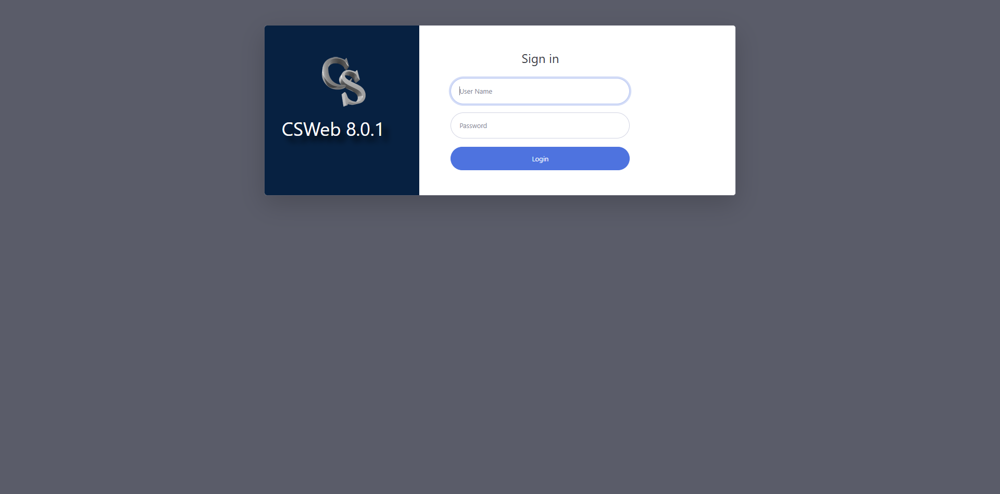
csweb.asiansocial.org/csweb/ — the administrator/field-sync sign-in.F2 — Healthcare Worker Survey (PWA) + Admin Portal
A browser-based survey for healthcare workers, with an administration portal. Unlike F1/F3/F4 (native CSEntry), F2 runs as an installable Progressive Web App — no app store, works offline, installs to the home screen.
The Healthcare Worker Survey (PWA)
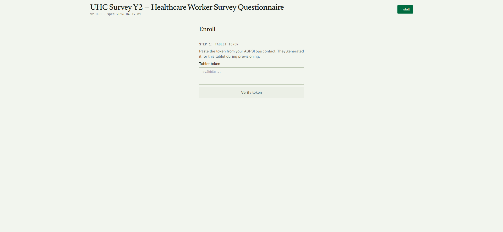
f2-pwa.pages.dev — UHC Survey Y2 · Healthcare Worker Survey Questionnaire (v2.0.0). The tablet enrols with a one-time token issued by the ASPSI ops contact; the Install button adds it to the device home screen as an offline-capable app.The Admin Portal
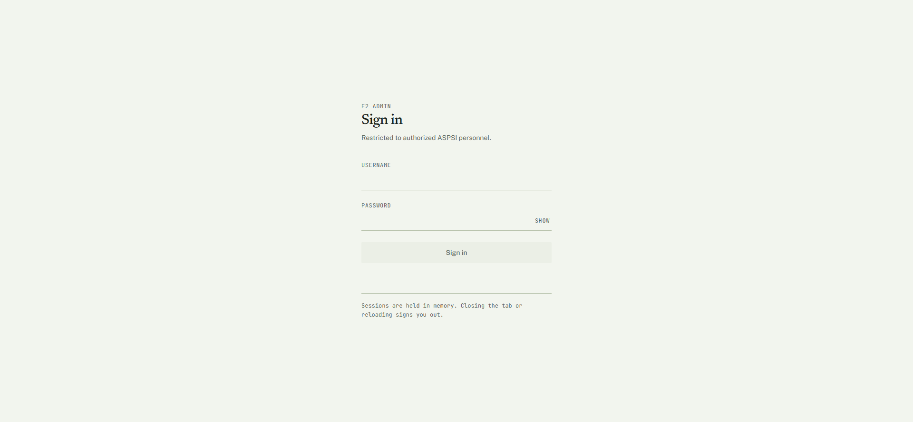
f2-pwa.pages.dev/admin/login — restricted to authorized ASPSI personnel; sessions are held in memory only.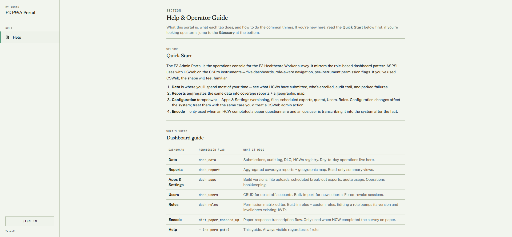
Complete question list
Every question the deployed instrument asks, grouped by section — generated from the question data so it matches the live app exactly. Click a section to expand.
Show all 124 questions — F2 — Healthcare Worker Survey (PWA), by section
Healthcare Worker Profile
- Q1. What is your name? (multiple fields)Last Name · First Name · Middle Initial
- Q2. What type of employment do you have at this health facility? (select one)Regular · Casual · Seasonal · Probationary · Project · Fixed-term · Other (specify)
- Q3. What is your sex at birth? (select one)Male · Female
- Q4. How old are you as of your last birthday (in years)? (number)
- Q5. What is your role at this health facility? (select one)Administrator · Physician/Doctor · Physician assistant · Nurse · Nursing assistant · Pharmacist/Dispenser · Midwife · Laboratory technician · Medical/ radiologic technologist · Health promotion officer · Nutrition action officer/ coordinator · Physical Therapist · Dentist · Dentist aide · Barangay Health Worker · Other (specify)
- Q6. What is your specialty, if any? (select one)No specialty · Anesthesia · Dermatology · Emergency Medicine · Family Medicine · General Surgery · Internal Medicine · Neurology · Nuclear Medicine · Obstetrics and Gynecology · Occupational Medicine · Ophthalmology · Orthopedics · Otorhinolaryngology (ENT) · Pathology · Pediatrics · Physical and Rehabilitation Medicine · Psychiatry · Public health · Radiology · Research · Others (specify)
- Q7. Do you practice at any private facility/ clinic? (select one)Yes · No
- Q8. How do you divide your time between public and private practice? (select one)I spend all of my time in private practice · I spend over half, but not all of my time in private practice · I spend my time equally in private and public practice · I spend over half, but not all of my time in public practice · I spend all of my time in public practice · I don't know
- Q9. In your current position, how many (months/years) have you worked at this health facility? (multiple fields)Year(s) · Month(s)
- Q10. How many days in a week do you work at this health facility? (number)
- Q11. On average, how many hours do you work per day? (number)
Universal Health Care (UHC) Awareness
- Q12. Have you heard about Universal Health Care (UHC) prior to this survey? (select one)Yes · No
- Q13. Has the increase in equipment been implemented since the UHC Act was passed in 2019 and was it a result of the UHC Act? (select one)Yes, this was implemented as a direct result of the UHC Act · Yes, this was pre-existing, but it has significantly improved due to the UHC Act · Yes, this has been implemented or improved recently, but not due to the UHC Act · Yes, specify other reason __________ · No, this has not been implemented yet, but we plan to in the next 1-2 years · No, and we have no plans to do this in the next 1-2 years · No, specify other reason __________ · I don't know
- Q14. What are these pieces of equipment? (text)
- Q15. Has the increase in supplies been implemented since the UHC Act was passed in 2019 and was it a result of the UHC Act? (select one)Yes, this was implemented as a direct result of the UHC Act · Yes, this was pre-existing, but it has significantly improved due to the UHC Act · Yes, this has been implemented or improved recently, but not due to the UHC Act · Yes, specify other reason __________ · No, this has not been implemented yet, but we plan to in the next 1-2 years · No, and we have no plans to do this in the next 1-2 years · No, specify other reason __________ · I don't know
- Q16. What are these supplies? (text)
- Q17. Has the use of electronic medical records at the facility been implemented since the UHC Act was passed in 2019 and was it a result of the UHC Act? (select one)Yes, this was implemented as a direct result of the UHC Act · Yes, this was pre-existing, but it has significantly improved due to the UHC Act · Yes, this has been implemented or improved recently, but not due to the UHC Act · Yes, specify other reason __________ · No, this has not been implemented yet, but we plan to in the next 1-2 years · No, and we have no plans to do this in the next 1-2 years · No, specify other reason __________ · I don't know
- Q18. Have the changes to the referral system (inbound or outbound) been implemented since the UHC Act was passed in 2019 and was it a result of the UHC Act? (select one)Yes, this was implemented as a direct result of the UHC Act · Yes, this was pre-existing, but it has significantly improved due to the UHC Act · Yes, this has been implemented or improved recently, but not due to the UHC Act · Yes, specify other reason __________ · No, this has not been implemented yet, but we plan to in the next 1-2 years · No, and we have no plans to do this in the next 1-2 years · No, specify other reason __________ · I don't know
- Q19. Have the changes in staffing been implemented since the UHC Act was passed in 2019 and was it a result of the UHC Act? (select one)Yes, this was implemented as a direct result of the UHC Act · Yes, this was pre-existing, but it has significantly improved due to the UHC Act · Yes, this has been implemented or improved recently, but not due to the UHC Act · Yes, specify other reason __________ · No, this has not been implemented yet, but we plan to in the next 1-2 years · No, and we have no plans to do this in the next 1-2 years · No, specify other reason __________ · I don't know
- Q20. Have the improved clinical practice guidelines been implemented since the UHC Act was passed in 2019 and was it a result of the UHC Act? (select one)Yes, this was implemented as a direct result of the UHC Act · Yes, this was pre-existing, but it has significantly improved due to the UHC Act · Yes, this has been implemented or improved recently, but not due to the UHC Act · Yes, specify other reason __________ · No, this has not been implemented yet, but we plan to in the next 1-2 years · No, and we have no plans to do this in the next 1-2 years · No, specify other reason __________ · I don't know
- Q21. Have the DOH licensing standards been implemented since the UHC Act was passed in 2019 and was it a result of the UHC Act? (select one)Yes, this was implemented as a direct result of the UHC Act · Yes, this was pre-existing, but it has significantly improved due to the UHC Act · Yes, this has been implemented or improved recently, but not due to the UHC Act · Yes, specify other reason __________ · No, this has not been implemented yet, but we plan to in the next 1-2 years · No, and we have no plans to do this in the next 1-2 years · No, specify other reason __________ · I don't know
- Q22. Have the PhilHealth accreditation requirements been implemented since the UHC Act was passed in 2019 and was it a result of the UHC Act? (select one)Yes, this was implemented as a direct result of the UHC Act · Yes, this was pre-existing, but it has significantly improved due to the UHC Act · Yes, this has been implemented or improved recently, but not due to the UHC Act · Yes, specify other reason __________ · No, this has not been implemented yet, but we plan to in the next 1-2 years · No, and we have no plans to do this in the next 1-2 years · No, specify other reason __________ · I don't know
- Q23. Have the service delivery protocols been implemented since the UHC Act was passed in 2019 and was it a result of the UHC Act? (select one)Yes, this was implemented as a direct result of the UHC Act · Yes, this was pre-existing, but it has significantly improved due to the UHC Act · Yes, this has been implemented or improved recently, but not due to the UHC Act · Yes, specify other reason __________ · No, this has not been implemented yet, but we plan to in the next 1-2 years · No, and we have no plans to do this in the next 1-2 years · No, specify other reason __________ · I don't know
- Q24. Have the primary care quality measures been implemented since the UHC Act was passed in 2019 and was it a result of the UHC Act? (select one)Yes, this was implemented as a direct result of the UHC Act · Yes, this was pre-existing, but it has significantly improved due to the UHC Act · Yes, this has been implemented or improved recently, but not due to the UHC Act · Yes, specify other reason __________ · No, this has not been implemented yet, but we plan to in the next 1-2 years · No, and we have no plans to do this in the next 1-2 years · No, specify other reason __________ · I don't know
- Q25. Which of the following do you expect to change in your personal work as a health worker under UHC? (select all that apply)Salary · Number of patients · Working hours · Standards to follow · Preventative health care · Patients seek healthcare in different ways · I don't know · Other (specify)
- Q26. How do you expect the following to change: Salary? (select one)Higher · Lower · I don't know
- Q27. How do you expect the following to change: Number of patients? (select one)Higher · Lower · I don't know
- Q28. How do you expect the following to change: Working hours? (select one)Longer · Shorter · I don't know
- Q29. How do you expect the following to change: Standards to follow? (select one)More stringent · Less stringent · I don't know
- Q30. How do you expect the following to change: Preventive healthcare? (select one)More · Less · I don't know
YAKAP/Konsulta Package
- Q31. Have you heard of the PhilHealth YAKAP/Konsulta package? (select one)Yes · No
- Q32. Which of the following are included in the YAKAP/Konsulta package? (select all that apply)Pap smear · Mammogram · Lipid profile · Thyroid function test · Chest X-ray · Low-dose Chest CT scan · Dental services · All of the above · I don't know
- Q33. Which of the following statements is true with regard to registering patients to YAKAP/Konsulta? (select one)It is possible to register individual patients to YAKAP/Konsulta · It is possible to register whole families to YAKAP/Konsulta · It is possible to register both individual patients and their family members together to YAKAP/Konsulta · None of the above are true · I don't know
- Q34. Are you part of a health facility that is an accredited PhilHealth YAKAP/ Konsulta provider? (select one)Yes · No · I don't know what PhilHealth YAKAP/Konsulta package accreditation is · Other (specify)
- Q35. Since when? (date)
- Q36. Why is your facility applying to become an accredited YAKAP/Konsulta provider? (select all that apply)Predictable revenue due to capitation · YAKAP is more comprehensive · High volume of patients · Other (specify)
- Q37. Why is your facility not accredited? (select all that apply)No time · Ongoing application · Other (specify)
- Q38. Under UHC, there is a thrust towards primary health care. Part of this is the implementation of the YAKAP/Konsulta or primary care package. Would your facility consider becoming accredited as a YAKAP/Konsulta or primary care provider? (select one)Yes · No · Not a physician/dentist
- Q39. Why would your facility consider it? (select all that apply)Predictable revenue due to capitation · YAKAP is more comprehensive · High volume of patients · Other (specify)
- Q40. What might convince your facility to become a primary care provider? (text)
Awareness on No Balance Billing (NBB) and Zero Balance Billing (ZBB)
- Q41. Have you heard about the No Balance Billing (NBB)? (select one)Yes · No
- Q42. What are your sources of information about NBB? (select all that apply)News · Legislation · Social Media · Friends/Family · Health center/facility · LGU/Barangay · I don't know · Other (specify)
- Q43. What is your understanding about the No Balance Billing (NBB)? (select all that apply)Patient does not pay any hospital bill · PhilHealth will cover cost of treatment · Medicine and service are already included · No cash payment required upon discharge · Applies only to PhilHealth members and DOH-run hospitals · Bills are settled between the hospital and PhilHealth · Patients should not be charged extra fees · Applies only to PhilHealth members and any public hospital · Applies only to PhilHealth members and any public and private hospital · I don't know · Other (Specify)
- Q44. Have you heard about the Zero Balance Billing (ZBB)? (select one)Yes · No
- Q45. What are your sources of information about ZBB? (select all that apply)News · Legislation · Social Media · Friends/Family · Health center/facility · LGU/Barangay · I don't know · Other (specify)
- Q46. What is your understanding about the Zero Balance Billing (ZBB)? (select all that apply)Patient does not pay any hospital bill · PhilHealth will cover cost of treatment · Medicine and service are already included · No cash payment required upon discharge · Applies only to PhilHealth members and DOH-run hospitals · Bills are settled between the hospital and PhilHealth · Patients should not be charged extra fees · Applies only to PhilHealth members and any public hospital · Applies only to PhilHealth members and any public and private hospital · I don't know · Other (Specify)
- Q47. What challenges do you commonly encounter for patients covered by ZBB? (select all that apply)Lack/Insufficient medicines/supplies · Limited diagnostic services · High patient volume/workload · Documentation/compliance issues · ICT/system limitations · Patient-related concerns · Other (specify) · None
Awareness on Expanded Health Programs (BUCAS and GAMOT)
- Q48. Have you heard about the Bagong Urgent Care and Ambulatory Service (BUCAS) center? (select one)Yes · No
- Q49. Do you have a BUCAS Center? (select one)Yes · No · I don't know
- Q50. In your assessment, what are the main factors affecting the utilization of BUCAS in your facility? (select all that apply)Patient awareness · Referral patterns · Availability of staff/services · Facility location and accessibility · PhilHealth coverage and reimbursement · Other (specify)
- Q51. Do you feel BUCAS improves patient management efficiently? (select one)Yes · No
- Q52. In your opinion, BUCAS Centers have: (select all that apply)Improved access to care · Improved quality of care · Reduced patient congestion · No significant impact · Other (specify)
- Q53. Have you heard about the Guaranteed and Accessible Medications for Outpatient Treatment (GAMOT) package? (select one)Yes · No
- Q54. Is your facility an accredited GAMOT provider? (select one)Yes · No
- Q55. In your assessment, what are the main factors affecting the utilization of the GAMOT package in your facility? (select all that apply)Availability of GAMOT medicines · Patient awareness of the program · Prescribing practices of physicians · Pharmacy capacity · PhilHealth eligibility and reimbursement processes · Other (specify)
Outbound & Inbound Referrals and Satisfaction
- Q56. What is/are the most common way/s you send referrals to higher level facilities? (select all that apply)Physical referral slip · E-referral · Referring facility calls receiving facility · Other (specify)
- Q57. What type of referral form do you use to send to higher level facilities? (select one)DOH standard referral form · Facility's standard referral form · Province's standard referral form · City / LGU standard referral form · No standard referral form · Other (specify)
- Q58. Do you have a network of specialist providers to refer patients to, if needed? (select one)Yes · No · I've never heard of it · I don't know
- Q59. Considering all patients who come to this facility for the past 6 months, what proportion of patients coming to this facility are referred from another facility compared to walk-ins? (select one)Almost all patients are referred, very few walk-in/self-referred · Majority of patients are referred, some walk-in/self-referred · The proportion of referrals is about equal to walk-ins · Majority of patients walk-in/self-referred, some are referred · Almost all patients walk-in/self-referred, very few are referred · I am unsure about the typical ratio of referrals to walk-ins
- Q60. Of those referred, what is/are the most common way/s you receive referrals from lower-level facilities? (select all that apply)Physical referral slip · E-referral · Referring facility calls receiving facility · Other (specify)
- Q61. How would you rate your satisfaction with your current referral system? (select one)Very Satisfied: Minor improvements needed, patients are always referred appropriately · Satisfied: Some improvements needed, patients are generally referred appropriately · Neither Satisfied nor Dissatisfied: Improvements needed, but generally functional · Dissatisfied: Moderate improvements needed, a number of patients are referred to the wrong specialists or do not receive appropriate follow-up care · Very Dissatisfied: Major improvements needed, many patients are referred to the wrong specialists or do not receive appropriate follow-up care
- Q62. Why are you not satisfied with the current referral system? (select all that apply)Facilities are overcrowded or operating beyond capacity and do not accept the health care provider's patient referrals · The referral process is slow · There is poor coordination between our facility and referred facilities (e.g. We do not get information back from the facility about the patients we referred to them.) · Other (specify)
Knowledge, Attitude, And Practices (KAP) on Professional Setting, Charging, And Reimbursement
- Q63. Are you aware of the facility-level professional fee policies in setting your professional fees? (select one)Yes · No
- Q64. If yes, do you consider them in setting your professional fees? (select one)Yes · No
- Q65. If no, why not? (text)
- Q66. Are you aware of the PhilHealth coverage rules in setting your professional fees? (select one)Yes · No
- Q67. Do you consider these in setting professional fees? (select one)Yes · No
- Q68. If no, why not? (text)
- Q69. Do you know the implications of the ZBB policy for professional fee charging? (select one)Yes · No
- Q70. Do you know the implications of the NBB policy for professional fee charging? (select one)Yes · No
- Q71. If yes, what are the implications? (text)
- Q72. Are you familiar with the Relative Value Unit (RVU)-based pricing? (select one)Yes · No
- Q73. If no, why not? (text)
- Q74. Aside from above policies, what other factors do you consider in setting your professional fee? (text)
- Q75. On a scale of 1-5 with 5 as highest, how fair is your professional fee reimbursement compared to colleagues in other specialties with similar years of training who practice in facilities which are not ZBB accredited? (select one)1 · 2 · 3 · 4 · 5
- Q76. On a scale of 1-5 with 5 as highest, how fair is your professional fee reimbursement compared to colleagues in other specialties with similar years of training who practice in facilities which are not NBB accredited? (select one)1 · 2 · 3 · 4 · 5
- Q77. On a scale of 1-5 with 5 as highest, how adequate is your professional fee given your specialization and expertise? (select one)1 · 2 · 3 · 4 · 5
- Q78. On a scale of 1-5 with 5 as highest, do you agree that the current reimbursement rates accurately reflect the complexity and cognitive effort required for your most frequent procedures? (select one)1 · 2 · 3 · 4 · 5
- Q79. On a scale of 1-5 with 5 as highest, does your professional fee compensate for the medico-legal risks associated with your specific field? (select one)1 · 2 · 3 · 4 · 5
- Q80. On a scale of 1-5 with 5 as highest, do reimbursement rates influence your practice's pricing strategy? (select one)1 · 2 · 3 · 4 · 5
- Q81. On a scale of 1-5 with 5 as highest, how acceptable is the professional fee regulation or standardization under UHC? (select one)1 · 2 · 3 · 4 · 5
- Q82. What is your opinion on the policy of charging different professional fees based on the patient's ability to pay? (text)
- Q83. How often do you charge your patients? (select one)Never · Rarely · Sometimes · Often · Always
- Q84. How often do you waive your professional fee? (select one)Never · Rarely · Sometimes · Often · Always
- Q85. How often do you give discounts/adjustments on your professional fee? (select one)Never · Rarely · Sometimes · Often · Always
- Q86. What coping strategies have you adapted when reimbursement is perceived as insufficient? (text)
- Q87. Have you experienced professional fee balance billing despite the insurance/ZBB? (select one)Yes · No
- Q88. Have you experienced professional fee balance billing despite the insurance/NBB? (select one)Yes · No
- Q89. If yes, what are those situations? (text)
- Q90. What challenges do you face in maintaining fair and sustainable professional fees? (text)
Task Sharing
- Q91. In your day-to-day work, how often do you have to perform tasks that should be performed by a different role? (select one)Everyday · More than once a week, but not everyday · Around once a week · Less than once a week, but at least once a month · Very rarely (can think of a few times only) · This has never happened to me
- Q92. When this happens, which of the following best applies to you? (select one)I typically have to take on tasks that should be performed by only staff / more junior health care providers to me · I typically have to take on tasks that should be performed only by staff / more senior health care providers to me · I have to take on tasks that should be performed by staff that are not health workers (e.g., cleaners, drivers, IT) · Other (specify)
- Q93. What are the most common tasks you do in your daily work that you could delegate to a more junior staff or different staff member? (select all that apply)Patient assessments · Clinical tasks (e.g. taking vital signs, drawing blood, hanging medicines) · Patient self-care support (e.g., cleaning patients, assisting with toilet) · Explaining treatment plans to patients and relatives · Administrative tasks (e.g. writing notes, requesting tests, encoding) · Other (specify)
- Q94. Which best explains why you take on these tasks? (select one)We are short staffed, so I have to · I am capable of the task, I just haven't completed official certification yet · I think that someone of my role should be responsible for these tasks · Other (specify)
- Q95. Do you agree or disagree with this statement: I think it's okay that health workers share tasks across roles even if they are beyond their job description. (select one)Agree but for medical tasks only · Agree but for clerical tasks only · Agree for both medical and clerical tasks · Disagree for both medical and clerical tasks
Facility Support
- Q96. Are you satisfied with the support you receive from your facility to implement UHC reforms? (select one)Yes · No
- Q97. Why not? (select all that apply)Insufficient support given · Hard to coordinate · Support is not targeted · Other (specify)
Job Satisfaction
- Q98. I am compensated fairly. (select one)Strongly Agree · Agree · Neither Agree nor Disagree · Disagree · Strongly Disagree
- Q99. All of my salary payments have arrived on time. (select one)Strongly Agree · Agree · Neither Agree nor Disagree · Disagree · Strongly Disagree
- Q100. All of my salary payments have arrived in the correct amount. (select one)Strongly Agree · Agree · Neither Agree nor Disagree · Disagree · Strongly Disagree
- Q101. The working environment is a fully supportive one. (select one)Strongly Agree · Agree · Neither Agree nor Disagree · Disagree · Strongly Disagree
- Q102. I am treated fairly at the workplace. (select one)Strongly Agree · Agree · Neither Agree nor Disagree · Disagree · Strongly Disagree
- Q103. My colleagues treat me with respect. (select one)Strongly Agree · Agree · Neither Agree nor Disagree · Disagree · Strongly Disagree
- Q104. My department/unit/practice provides a supportive environment for everyone regardless of background, beliefs, or identity. (select one)Strongly Agree · Agree · Neither Agree nor Disagree · Disagree · Strongly Disagree
- Q105. I have access to the resources I need to do my job well. (select one)Strongly Agree · Agree · Neither Agree nor Disagree · Disagree · Strongly Disagree
- Q106. In this post, I am given opportunities to develop my leadership skills relevant for my stage of training. (select one)Strongly Agree · Agree · Neither Agree nor Disagree · Disagree · Strongly Disagree
- Q107. I am satisfied with the professional development opportunities I have in my job. (select one)Strongly Agree · Agree · Neither Agree nor Disagree · Disagree · Strongly Disagree
- Q108. In addition to your salary, what other benefits as an accredited healthcare provider do you receive? (text)
- Q109. What additional resources do you need to perform well in this job? (select all that apply)Professional development opportunities · Better compensation policies · Better equipment / facilities · Other (specify) · None
- Q110. What opportunities to develop leadership skill/s would be useful to you? (select all that apply)Seminars, conferences, workshops · Supervisory trainings · More training related to my job post · Other (specify)
- Q111. Which of the following professional development opportunity/ies is/are currently provided to you by your facility? Check all that apply (select all that apply)Clinical audits · Surgical audits · Quality assurance meetings · Seminars, conferences, workshops · Support for independent professional development: scholarships · Support for independent professional development: research grants · None
- Q112. Which of the following professional development opportunity/ies would be most useful to you? (select all that apply)Clinical audits · Surgical audits · Quality assurance meetings · Seminars, conferences, workshops · Support for independent professional development: scholarships · Support for independent professional development: research grants · Other (specify)
- Q113. In the past month, I have worked beyond my scheduled hours. (select one)Always · Often · Sometimes · Seldom · Never
- Q114. I have been compensated for working overtime. (select one)Always · Often · Sometimes · Seldom · Never
- Q115. My work is emotionally exhausting. (select one)Always · Often · Sometimes · Seldom · Never
- Q116. My work frustrates me. (select one)Always · Often · Sometimes · Seldom · Never
- Q117. I feel worn out at the end of a working day. (select one)Always · Often · Sometimes · Seldom · Never
- Q118. I feel exhausted every morning at the thought of another day at work. (select one)Always · Often · Sometimes · Seldom · Never
- Q119. I feel that every working hour is tiring for me. (select one)Always · Often · Sometimes · Seldom · Never
- Q120. I have enough energy for family and friends during leisure time. (select one)Always · Often · Sometimes · Seldom · Never
- Q121. I have worked overtime for: (select one)Once or twice in the past month · Once or twice a week · Three or four days every week · Almost everyday · Everyday
- Q122. Have you considered leaving this facility? (select one)Yes, I've thought about it and have definite plans to leave · Yes, I've thought about it and am actively exploring other opportunities, but no firm plans yet · Yes, I've thought about it, but I'm not actively exploring nor have I made any firm plans yet · No, I haven't thought about it
- Q123. Why are you planning on leaving this facility? (select all that apply)Poor compensation · Lack of opportunities · Burnt out · Moving to another part of the country · Moving to another country · Other (specify)
- Q124. What are you planning to do after leaving this facility? (select all that apply)Transfer to a new facility with the same role · Change training/specialization within healthcare · Change profession · Take an extended leave from work · Take a position as a health worker in another country · Retire · Other (specify)
Draft system documentation for PSA review — intended for hosting at
csweb.asiansocial.org/docs.